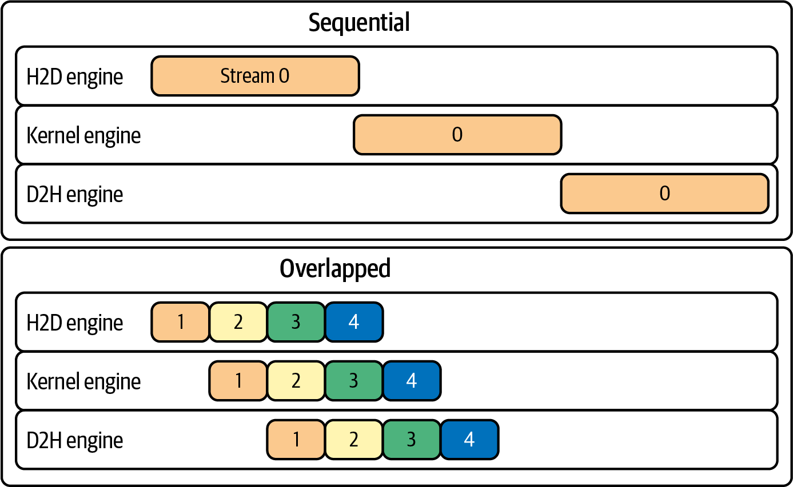
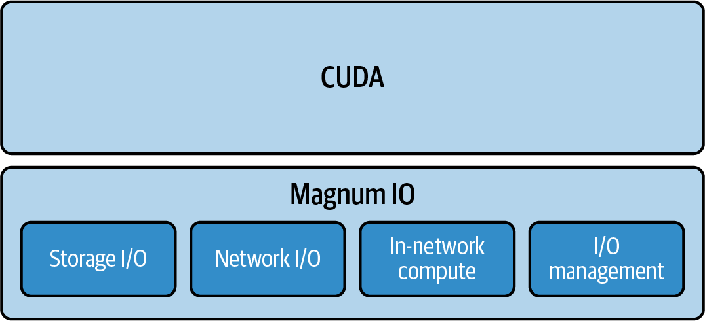
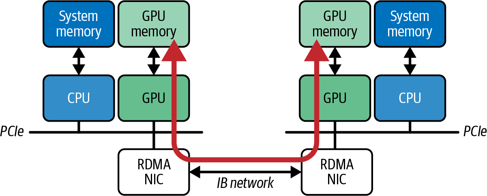
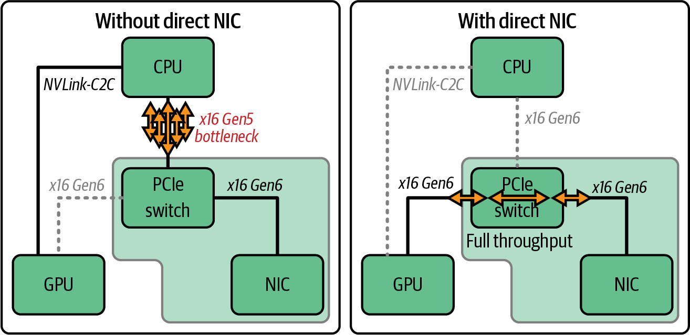
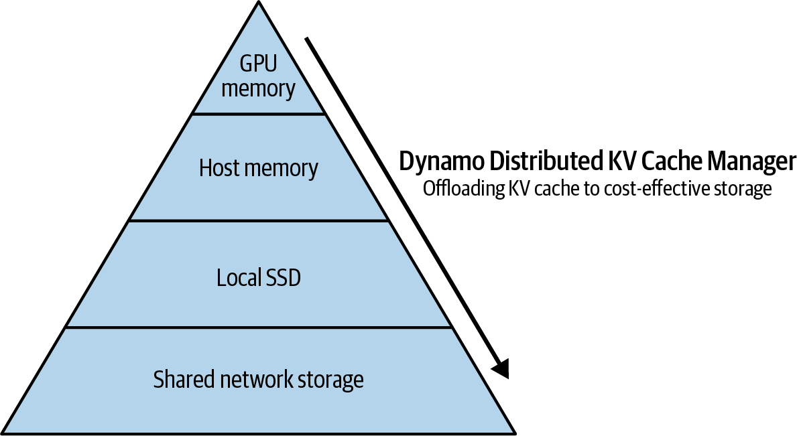
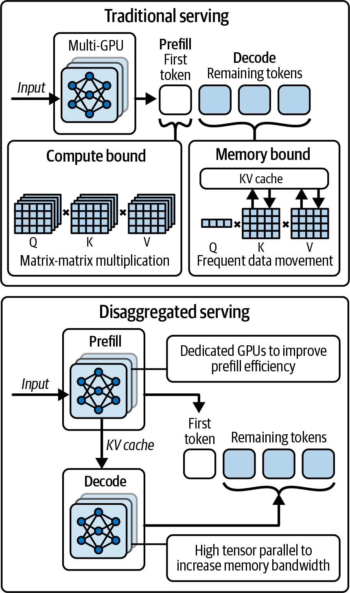
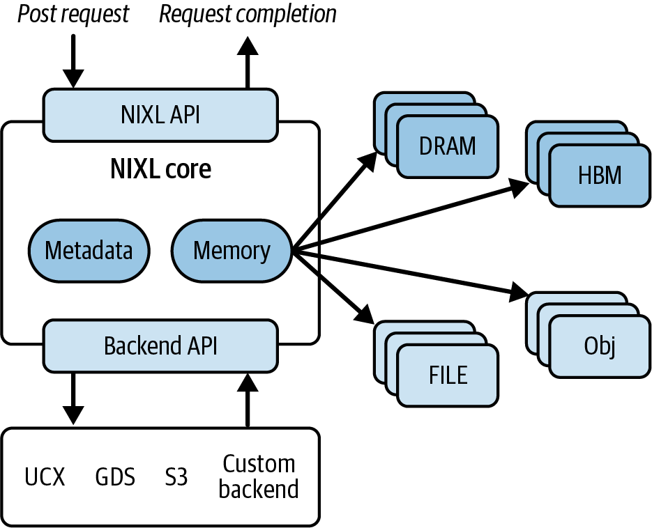
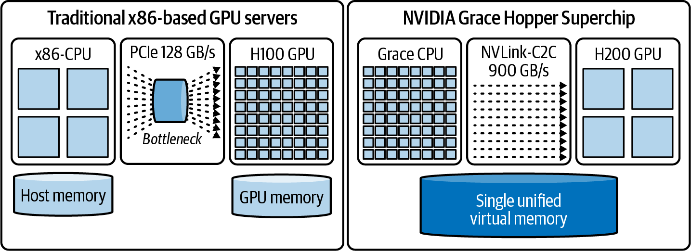
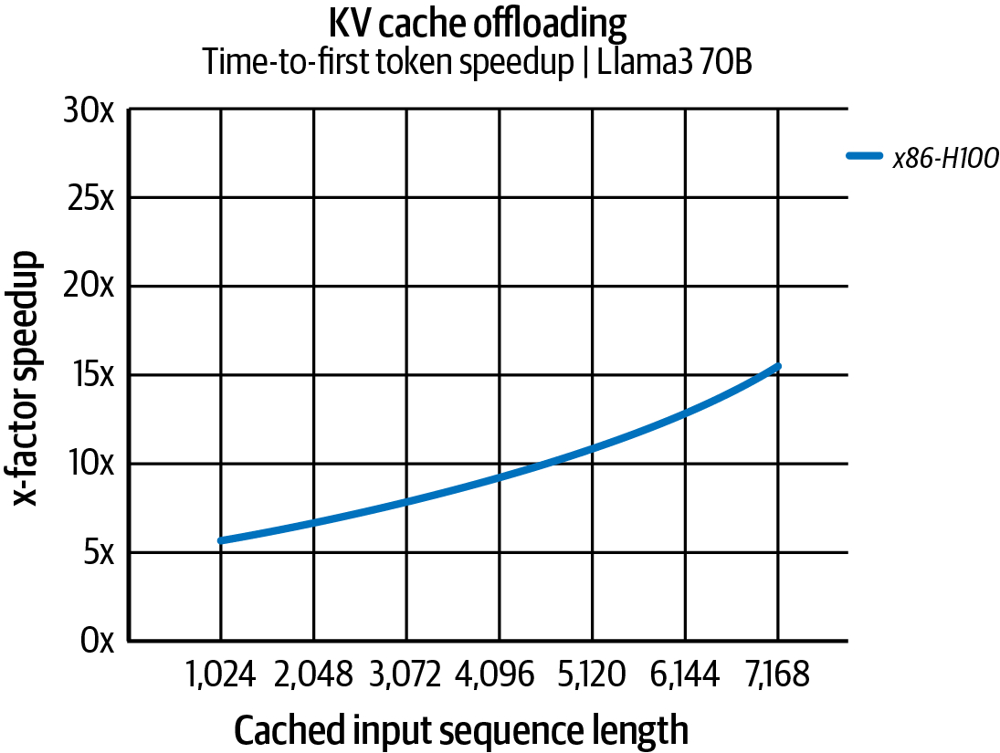
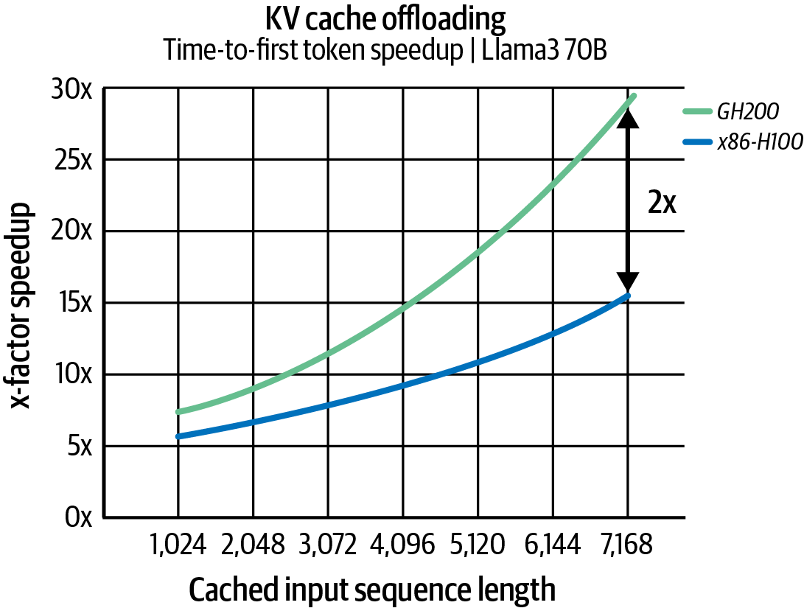

现代 AI 系统需要在 GPU、存储和网络接口之间高效、低延迟地移动数据。本章介绍用于训练的 NVIDIA Magnum IO 组件（例如 NCCL、GPUDirect RDMA 和 GDS），以及用于解耦式推理的 NIXL，并结合现代 GPU 与 NVL72 等集群讨论其应用。你将了解这些库及其支持的底层硬件如何共同构成超大规模 AI 系统的数据传输基础。
在大规模系统中，即使 GPU 本身很快，低效的通信以及内存或磁盘数据传输仍会限制整体性能。本章将讨论加速数据传输、合理划分数据、直接利用高速存储子系统，以及在 GPU 上重叠通信与计算的高级模式。通信与计算重叠是 AI 系统性能工程中反复出现的重要方法。
我们将借助 NVIDIA I/O 加速平台 Magnum IO 的组件来说明通信与计算重叠，其中包括 NCCL、GPUDirect RDMA 和 GPUDirect Storage（GDS）。本章将展示如何使用这些库，在受支持的硬件和正确拓扑配置下，降低通信延迟、减少 CPU 数据搬运开销，并提高多节点、多 GPU AI 系统各层的有效吞吐量。
PyTorch 等高层 AI 框架可以调用这些底层库，让部分计算与通信并行执行。把这些技术纳入 AI 系统，需要从应用、运行时、网络和存储整体考虑，可用于加速超大模型训练的数据流水线，也可支持扩展分布式推理服务；具体规模和收益仍取决于工作负载与部署条件。
这些优化并不能自动确保每个组件都达到峰值性能。性能工程师需要测量并配置网络与存储 fabric，在吞吐、尾延迟、可靠性和资源竞争等约束下，提高 GPU 有效利用率和 goodput（有效吞吐量）。
重叠通信与计算，也称为流水线化，是构建高效大规模训练和推理系统的重要方法。其目标是让 GPU 持续执行有用工作，减少等待数据的时间。
核心思想是在依赖关系允许时，让数据传输与正在进行的计算并发执行，使一个任务完成时，下一阶段需要的结果已经在传输或已经到达。PyTorch 等现代框架支持异步操作，因此梯度 all-reduce 等集合通信有机会与计算任务并行。如图 4-1所示，这可以减少 GPU 空闲时间并提高系统吞吐；但只有当通信和计算使用的资源、stream 与依赖关系允许并发时，时间线才会真正重叠。

基于 CUDA 的库可以利用多个 CUDA stream。例如，一个 stream 执行计算密集型矩阵乘法，另一个 stream 处理梯度聚合等通信任务。神经网络各层完成计算后，已就绪的梯度或输出可立即进入聚合或后续处理。若硬件支持并发、操作位于不同 stream 且同步依赖正确，这种重叠就能减少不必要的等待并维持较稳定的数据流。
增加两次通信事件之间的计算量，可以降低通信开销在总时间中的相对占比。较大的批次通常意味着同步交换之前能完成更多计算，但也会增加显存占用，并可能影响收敛、延迟和最大可用并行度。
在分布式训练中，常见做法是梯度累积：先处理多个微批次，再执行一次参数更新或梯度同步。降低通信频率可以摊薄每次交换的固定开销并提高吞吐，但通信数据总量是否降低取决于实现，累积步数也会改变有效批大小和优化行为。
压缩也可缩短通信占用的时间窗口。比如，发送梯度前对其量化、稀疏化或编码，可以减少网络传输的数据量，从而降低链路占用并缓解拥塞。
不过，压缩本身并不会产生重叠，而且还会引入编解码计算、额外缓冲和潜在数值误差。只有节省的传输时间超过这些成本，并且压缩操作能够正确调度时，端到端性能才会改善。
现代深度学习框架还会把大型张量通信拆分为较小的 bucket，以促进重叠。例如，PyTorch DistributedDataParallel 通常按 bucket 聚合梯度；某个 bucket 的梯度全部就绪后即可启动 all-reduce，而不必等所有参数的梯度都计算完成。具体就绪顺序与 bucket 行为取决于模型反向图和框架配置。
合理调整 bucket 大小和传输调度，可以提高重叠程度，减少通信阻塞计算流水线的情况。bucket 过小会增加启动和调度开销，过大则会推迟通信开始。PyTorch profiler 和 NVIDIA Nsight Systems 可用于查看计算、复制与集合通信是否实际重叠，从而依据时间线调节参数。
较大批次、梯度累积、异步传输、压缩和 bucket 化可以组合使用，以减少同步次数和空闲时间。但这些方法不能消除物理网络上限，也不保证最优 GPU 利用率；需要同时测量训练收敛、显存、带宽、尾延迟和 goodput。
在适用的工作负载中，这些优化可以缩短训练或推理时间，并提高硬件资源的有效使用率。成熟的通信库和框架让工程师无需重复实现底层网络协议，但拓扑选择、正确性验证和高层参数调优仍是系统工程的一部分。
实现重叠的基础是异步执行。GPU 支持多个 stream，即有序操作队列。不同 stream 中的操作在依赖关系允许、且硬件执行资源或 copy engine 具备并发能力时，才可能并发或重叠。例如，一个 stream 可执行矩阵乘法等计算内核，另一个 stream 可排入数据复制或 all-reduce 等通信操作；放入不同 stream 本身并不保证并行。
把工作分配到不同 stream 并使用异步 API，可以让主机在通信完成前继续提交其他工作。例如，可把 all-reduce 排入通信 stream，而不在主机端立即等待其 GPU 执行完成。这里的“后台”是指设备时间线上的异步进展，并非通信不消耗 GPU、网络或内存带宽。
与此同时，默认 stream 可继续处理与该通信没有数据依赖的计算。NCCL 等库的集合操作通常会把工作排入给定 CUDA stream，并在操作实际完成前把控制权返回主机；这与某些 API 所称的 nonblocking communicator 初始化或错误处理模式不是同一个概念。程序必须用 CUDA event、stream wait 或框架依赖跟踪，在消费者真正使用通信结果前建立正确同步。
实践中，AI 框架会隐藏其中许多细节。PyTorch DistributedDataParallel（DDP）在反向传播中注册 autograd hook，把参数梯度组织为 bucket；当某个 bucket 中的梯度就绪时，reducer 会安排相应的异步集合通信，使其有机会与其余梯度计算重叠。具体 stream、bucket 重建、通信 hook 和同步行为会随 PyTorch 版本及后端实现而变化，不应假定所有 all-reduce 都固定运行在一个公开可控的“专用通信 stream”上。
后续章节将深入介绍 CUDA stream。目前只需记住：stream 可用于表达独立工作及其依赖，为通信与计算重叠创造条件，并帮助避免代码中不必要的同步点。
使用 CUDA stream 交错安排计算与通信，可以形成级联流水线，并在关键路径之外隐藏一部分通信延迟；它不能保证 GPU 始终繁忙，因为执行仍可能受依赖、带宽竞争、负载不均或网络延迟限制。应避免在热路径中不必要地调用 torch.cuda.synchronize()。torch.Tensor.item() 把标量结果返回 CPU 时，也会等待生成该值所需的 GPU 工作，因此可能打断流水线，但不应笼统描述为所有情况下都执行完整设备同步。性能测量优先使用正确记录在 stream 上的 CUDA event；若测量端到端墙钟时间，则可在测量边界同步，而不是在生产训练的每次迭代中无条件加入全局同步。
如前所述，在每次通信之间完成更多工作，有时可以提高计算/通信比和整体效率。梯度累积是一种常见方法：先在本地累积多个微批次的梯度，再执行一次跨 rank 同步。对于 PyTorch DDP，需要在非同步微批次使用 no_sync() 或等效机制；仅多次调用 backward 而不抑制 DDP hook，通常仍会在每个微批次触发梯度通信。
例如，每 4 个微批次同步一次，理论上可把 all-reduce 调用频率降为原来的四分之一，使两次同步之间执行更多计算。但有效全局批大小通常会增大，并可能影响优化器超参数、收敛、激活/梯度内存和故障恢复粒度。是否值得采用，应在通信时间、显存、吞吐与模型质量之间测量权衡。
另一种减少通信量的方法是压缩或量化交换的数据。梯度量化、低精度通信或稀疏化可能减少每次发送的字节数，从而缩短链路占用时间，为重叠留下更多空间。但压缩/解压也需要计算和缓冲，误差可能累积；稀疏表示还会产生索引及不规则通信开销。通常需要误差反馈等算法设计，并通过最终模型质量验证，不能默认“不会显著影响质量”。
PyTorch DDP 的 bucket 机制把多个参数梯度组合为较大的通信缓冲区，以摊薄每次 collective 的启动开销。bucket 大小需要权衡：较大 bucket 通常更容易获得较高链路效率，却会等待更多梯度就绪后才启动；较小 bucket 可以更早通信，但会产生更多 NCCL 调用和调度开销。
撰写本书时，PyTorch DDP 的 bucket_cap_mb 默认值为 25 MiB（API 参数名虽含 mb，文档按 MiB 描述），而不是严格的十进制 25 MB。这个默认值只是通用起点，并不保证多数模型都能得到最佳重叠。大型层、多小层、动态图、梯度就绪顺序和网络特性都会改变最优值；应使用 profiler 比较不同 bucket 配置的迭代时间、通信带宽和显存占用。
为了说明通信与计算重叠可能带来的收益，下面比较两种情形：一种是在全部计算结束后同步执行梯度通信，二者不重叠；另一种使用 DDP，让部分梯度通信有机会与反向计算重叠。示例以两块 GPU 模拟一个简单的分布式训练步骤，但它主要用于说明时间线概念，并不是完整基准。
第一种情形不使用 DDP 内置的重叠机制。每个进程先在本地计算全部梯度，再在反向传播结束后对各参数梯度执行 all-reduce。可以使用 PyTorch distributed primitive，在 loss.backward() 之后显式调用 dist.all_reduce，形成计算完成后才开始通信的串行时间线。
下面的代码在单个节点上尝试启动两个进程，分别对应 GPU/rank 0 和 GPU/rank 1。它运行前向与反向传播，再手动对两个进程的梯度求和并除以 world size。代码保持原文不变；运行时仍需通过环境或启动器提供 MASTER_ADDR、MASTER_PORT 等 env:// rendezvous 参数，且单 GPU fallback 也需要有效的进程组初始化环境。
importtorchimporttorch.nnasnnimporttorch.optimasoptimimporttorch.distributedasdistimporttorch.multiprocessingasmp# A simple model with multiple layers to produce multiple gradientsclassMultiLayerNet(nn.Module):def__init__(self,size):super().__init__()self.fc1=nn.Linear(size,size)self.fc2=nn.Linear(size,size)self.fc3=nn.Linear(size,1)defforward(self,x):x=torch.relu(self.fc1(x))x=torch.relu(self.fc2(x))returnself.fc3(x)deftrain_no_overlap(rank,world_size):dist.init_process_group("nccl",init_method="env://",world_size=world_size,rank=rank)torch.cuda.set_device(rank)# Each rank synthesizes its own data# (avoid sending big tensors via spawn)batch_size=256data=torch.randn(batch_size,1024,device=rank)target=torch.randn(batch_size,1,device=rank)model=MultiLayerNet(data.size(1)).to(rank)optimizer=optim.SGD(model.parameters(),lr=0.01)# Forward + backward (manual, no overlap)output=model(data)loss=nn.functional.mse_loss(output,target)loss.backward()# Synchronous gradient all-reduce after backwardforpinmodel.parameters():dist.all_reduce(p.grad,op=dist.ReduceOp.SUM)p.grad/=world_sizeoptimizer.step()dist.destroy_process_group()if__name__=="__main__":importtorch.multiprocessingasmpmp.set_start_method("spawn",force=True)world_size=min(2,torch.cuda.device_count()or1)ifworld_size>1:mp.spawn(train_no_overlap,args=(world_size,),nprocs=world_size,join=True)else:train_no_overlap(0,1)
每个进程独立计算 MultiLayerNet 的梯度。loss.backward() 返回后，代码逐个参数执行 all-reduce，再除以 world size 得到平均梯度。DDP 内部同样需要归约梯度，但会按 bucket 组织通信并在反向传播过程中尽早启动；这里则等全部反向计算完成后才逐个归约，因此没有计算/通信重叠，而且多次小 collective 本身也可能增加启动开销。
假设前向加反向计算耗时 10 ms，所有梯度通信单独耗时 12 ms，在完全串行且忽略其他开销时，总时间约为 22 ms。理论上的完全重叠下界接近两者最大值 12 ms，但这个下界通常不可直接达到：梯度只有在反向传播逐步生成后才能通信，早期计算之前没有可用梯度，最后一个 bucket 之后也可能留下通信尾部，计算与 NCCL 还会争用 GPU 和内存带宽。因此必须从实际时间线测量可隐藏的比例。
用 Nsight Systems 分析无重叠示例，预期会先看到反向计算内核，再看到显式 NCCL all-reduce；两阶段之间较清晰。在通信阶段，SM 并非严格“空闲”，因为 NCCL 的 GPU kernel 也可能使用 SM、copy engine 和内存系统，但此时没有模型计算与之并发。
下面改用 PyTorch DDP。DDP 在反向传播中跟踪梯度就绪状态，并按 bucket 安排归约，使通信有机会与其余反向计算重叠。代码通过 DistributedDataParallel 包装模型来处理同步。原文行内标识符中的排版用零宽字符已清除；此外，该程序清单引用 os.environ 却缺少 import os，实际运行前必须补充。
importtorchimporttorch.nnasnnimporttorch.optimasoptimimporttorch.distributedasdistimporttorch.multiprocessingasmpclassMultiLayerNet(nn.Module):def__init__(self,size):super().__init__()self.fc1=nn.Linear(size,size)self.fc2=nn.Linear(size,size)self.fc3=nn.Linear(size,1)defforward(self,x):x=torch.relu(self.fc1(x))x=torch.relu(self.fc2(x))returnself.fc3(x)deftrain_ddp(rank,world_size):rank=int(os.environ.get("LOCAL_RANK",rank))torch.cuda.set_device(rank)dist.init_process_group("nccl",init_method="env://",world_size=world_size,rank=rank)torch.cuda.set_device(rank)model=MultiLayerNet(1024).to(rank)ddp_model=nn.parallel.DistributedDataParallel(model,device_ids=[rank])optimizer=optim.SGD(ddp_model.parameters(),lr=0.01)# Each rank makes its own databatch_size=256data=torch.randn(batch_size,1024,device=rank)target=torch.randn(batch_size,1,device=rank)output=ddp_model(data)loss=nn.functional.mse_loss(output,target)loss.backward()# DDP overlaps gradient all-reduce on background streamoptimizer.step()dist.destroy_process_group()defmain():world_size=min(2,torch.cuda.device_count()or1)mp.set_start_method("spawn",force=True)ifworld_size>1:mp.spawn(train_ddp,args=(world_size,),nprocs=world_size,join=True)else:("Only one GPU present; running DDP demo with world_size=1")train_ddp(0,1)if__name__=="__main__":main()
使用 DDP 后，梯度同步由 DistributedDataParallel 处理，用户代码更简单。调用 loss.backward() 时，DDP reducer 跟踪 bucket 中梯度的就绪状态，并在整个 bucket 就绪后安排 all-reduce。对该顺序网络而言，反向传播通常先计算输出侧 fc3 的梯度，再依次处理 fc2 和 fc1；原文称 fc3 最后计算、而 fc1/fc2 已先完成归约，顺序写反了。实际 bucket 边界不一定按单层划分，第一轮还可能根据梯度就绪顺序重建 bucket。
如果模型很小，全部梯度可能只落入一个 bucket，通信接近反向末尾才开始，重叠空间有限。更大模型可能产生多个 bucket，但更大 batch 并不会自动增加 bucket 数；它通常增加每层计算量，从而可能扩大隐藏固定梯度通信的计算窗口。是否获得显著收益仍取决于 bucket、网络、计算/通信比例和资源竞争。
分析 DDP 时间线时，可能看到 NCCL all-reduce 与反向计算内核交错或并发，而不是严格的先计算、后通信两阶段。理想时间线中的通信应尽量位于其余反向计算之下；仅看到锯齿状交替并不等同于真正重叠，还需检查时间区间是否并发以及关键路径是否缩短。
较好的重叠通常表现为：迭代总时间小于独立测得的计算与通信时间之和，通信等待较少，且 collective 与可并行计算在时间线上实际并发。表 4-1给出概念性比较，其中数值不是这两段代码实测所得。
| 指标 | 无重叠（手动同步） | 重叠（DDP） | 说明 |
|---|---|---|---|
| 反向传播与通信总时间 | 100%（基线） | 约为基线的 70% | 例如，重叠使每次迭代快约 30%（仅作示意） |
| 通信开始时间 | 反向传播完成后 | 反向传播期间 | DDP 可在部分 bucket 就绪后开始通信 |
| 通信阶段的模型计算空档 | 存在：反向结束后只执行 all-reduce | 可能较少：通信与其他层计算并发 | DDP 可能隐藏部分通信延迟 |
| SM（GPU）利用情况 | 可能较低（通信期间没有模型计算） | 可能较高（活动更连续） | NCCL 自身也可能占用 SM；需以 profiler 为准 |
| 实现的重叠比例（被计算覆盖的通信比例） | 0%（串行执行） | 约 50%（或更高） | 粗略示意；实际比例取决于模型、bucket 和系统 |
注意：所有指标表中的数值都用于说明概念，并非上述代码的实测结果。不同 GPU 架构上的基准结果见本书 GitHub 仓库。
表中假设重叠可使迭代时间缩短约 30%，但这不是示例代码测得的结果，也不能推出更大训练作业必然获得更大收益。更大模型既可能提供更多重叠机会，也可能加重网络、显存和负载不均瓶颈。PyTorch DistributedDataParallel 的 bucket_cap_mb 默认值为 25 MiB。调整该参数可能改善特定模型的重叠；较大 bucket 通常推迟通信启动，不只是增加“最后一个 bucket”的延迟，而较小 bucket 会增加 collective 启动开销。
核心结论是：经过分析和调优的 DDP 可以隐藏一部分梯度通信。通常至少存在通信尾部，因为最后就绪的 bucket 之后没有剩余反向计算可用于覆盖；此外，较早 bucket 的通信也未必都能隐藏。研究者还在探索将优化器步骤与通信重叠、张量分区等方法。DDP 的基本策略与无等待反向传播（wait-free backpropagation，WFBP）思想相近：对梯度分组，并在 bucket 就绪后尽早启动归约。相关研究给出了更系统的分析。
某些编码模式会无意间削弱重叠。例如，在反向传播和下一次迭代之间读取尚未就绪的设备结果，会让主机等待相应 GPU 工作；是否阻塞后续设备工作取决于调用位置、依赖与提交方式。
应减少在热路径中把未就绪张量从 GPU 物化到 CPU 的操作，例如频繁调用 .item() 后立即打印或记录。该调用必须等待产生目标值所需的设备工作，可能使主机提交路径停顿并破坏流水线。调试日志的影响取决于频率和位置，不应一概而论；可降低采样频率、批量记录，或在明确同步边界后读取。
不能简单地把 .item() 这类需要返回 CPU 值的操作“移到另一个 CUDA stream”来消除等待；主机最终仍需等数据可用。更实用的做法是减少同步读取、延迟消费、批量日志，并在需要异步 D2H 时使用锁页缓冲区、独立 stream、event 和正确的缓冲区生命周期管理。应尽量减少手动调用 torch.cuda.synchronize()，只在正确性或明确的测量边界需要时使用。PyTorch 通常会跟踪算子依赖，但与外部库、自定义 stream、主机读取及缓冲区复用交互时，用户仍可能需要显式同步。
总之，重叠计算与通信是分布式性能工程中的重要技术。正确使用时，它能把部分通信延迟隐藏在有用计算之后，从而缩短关键路径；实际收益必须通过时间线和端到端迭代时间验证。
后续小节将介绍支持这些机制的软件和硬件基础设施，以及如何在现代系统上评估实际重叠程度。下一节概览 NVIDIA Magnum IO 栈，其中包含支持计算、网络与存储数据路径协同的技术。
NVIDIA 的综合 I/O 加速平台 Magnum IO汇集多种技术，用于改善 GPU、CPU、存储与网络接口之间的数据移动、访问和管理。Magnum IO 架构可概括为存储 I/O、网络 I/O、在网计算与 I/O 管理四个组成部分，如图 4-2所示。

图 4-2中的四个组成部分如下：
相关技术包括 NVIDIA GPUDirect Storage（GDS）和 BlueField SNAP。在受支持的存储、文件系统、驱动与拓扑上，GDS 可在 NVMe SSD 等存储与 GPU 内存之间建立直接 DMA 数据路径，减少经主机 CPU 内存 bounce buffer 的不必要复制；CPU 仍参与 I/O 提交与控制路径。第 5 章将深入讨论 GDS。
相关技术包括 GPUDirect RDMA、NCCL、NVSHMEM、UCX 和 HPC-X（MPI/SHMEM 软件包）。它们分别在不同抽象层支持跨节点 GPU 通信。GPUDirect RDMA 可在兼容配置下让 NIC 与 GPU 内存直接进行 DMA，绕过主机内存 staging；这并不意味着 CPU 完全不参与节点间通信的控制、连接建立和进度管理。
SHARP 可在 Quantum 系列 InfiniBand 交换机中执行在网归约，部分归约运算由交换机芯片完成。BlueField DPU 可卸载网络工作，并可承载 Subnet Manager、SHARP Aggregation Manager 等控制服务。当启用 NCCL RDMA SHARP 插件，fabric 具备兼容的 SHARP 固件和活动 Aggregation Manager，而且集合操作符合支持条件时，部分归约可卸载到 IB 交换机，从而减少主机或 GPU 承担的通信处理。后文将进一步介绍 NVIDIA SHARP。
以太网 GPU 集群可通过 RoCEv2 等技术提供 RDMA，但不具备 InfiniBand SHARP 这一特定交换机内归约机制。InfiniBand 与 Ethernet/RoCE 在拥塞控制、运维生态、成本、可扩展性和在网能力上各有取舍；不能仅根据是否支持 SHARP 判断哪一种互连更适合超大规模 AI。SHARP 对受支持的 collective 和拓扑可能带来收益，但应在目标 fabric 上验证，并考虑资源共享、公平性与回退路径。
NVIDIA NetQ 和 Unified Fabric Manager（UFM）等工具属于这一类别，为数据中心 I/O fabric 提供遥测、诊断与生命周期管理能力。具体支持范围分别面向相应的 Ethernet 或 InfiniBand 产品与版本。
这些组件通过 API 和 SDK 协同工作，隐藏一部分底层复杂性。Magnum IO 的目标是改善大规模 AI 与数据分析工作负载的端到端数据路径和吞吐量；它不是单一运行时，也不能自动保证所有组件达到峰值性能，其功能会随硬件与软件版本演进。
Magnum IO 生态还支持 NVLink Switch 网络域，用于机架内或 NVLink fabric 域中的 GPU 通信，并利用 InfiniBand（Quantum-2、Quantum-X800 系列）和 Ethernet（Spectrum-X）平台的能力。实际通信开销取决于系统代际、拓扑、路由、软件配置和工作负载。
本章后续将深入介绍用于网络传输的 RDMA、用于 collective 的 NCCL、用于推理数据移动的 NIXL，以及用于数据加载的 GDS，并讨论如何分析和调优这些组件。
RDMA（远程直接内存访问）面向低延迟、高吞吐数据传输。它允许 RDMA NIC 直接读写已注册的应用内存，绕过传统内核网络栈中的大部分逐包处理和中间复制，从而减少上下文切换、缓冲区复制和 CPU 数据路径开销。CPU 仍负责建立队列、注册内存、提交 work request 和处理 completion。应只在受支持且已验证的环境中选用 RDMA，并持续通过日志、计数器和微基准确认实际数据路径。
在 Docker 和 Kubernetes 等容器环境中，容器需要获得相应 RDMA 设备（例如 /dev/infiniband）、网络接口、驱动库和权限。否则 NCCL 可能回退到 socket transport，或使用非 GPUDirect 的主机 staging 路径。回退通常可在 NCCL 日志中发现，但应用未开启日志时可能只表现为吞吐下降。原文所举“数十 GB/s 降至数 Gb/s”不是通用幅度，应以目标链路基准为准。
另一个容器常见问题是 RoCE GID、网络 namespace、接口索引或 RDMA 资源配置与宿主机不一致，某些共享 RDMA 镜像尤其容易出现。GID 不匹配更常导致寻址、建链或选择错误端口；它并不必然直接“阻止 GPUDirect 内存注册”。应分别验证 RDMA 连接、GPU 内存注册和实际传输路径，避免把所有回退都归因于 GID。
应验证实际使用的是 GPUDirect RDMA。采用 legacy peer-memory 路径时，可用 lsmod | grep nvidia_peermem 并检查 dmesg；采用较新的 DMA-BUF 路径时，不一定加载 nvidia_peermem。端到端验证可启用 NCCL_DEBUG=INFO 检查实际 network plugin/transport，并在兼容版本中使用支持 CUDA 缓冲区的 RDMA perftest。还应结合 NIC/GPU 计数器与拓扑验证，避免隐蔽回退。
传输路径回退可能在 profiler 或通信基准中表现为吞吐下降、主机内存复制增加或 CPU 占用上升，但不一定达到一个数量级。监控应覆盖 NCCL transport 日志、链路吞吐、重传/拥塞指标、CPU 使用率及 GPU 通信时间。
NVIDIA GPU 的相关能力称为 GPUDirect RDMA。它允许 InfiniBand 或 RDMA over Converged Ethernet（RoCE）等 RDMA NIC 在两台服务器之间直接 DMA 访问 GPU 设备内存，绕过主机系统内存中的数据 staging，而不是“完全绕过 CPU”。RoCE 上的 GPU 间直接数据路径如图 4-3所示。

通过向 RDMA 子系统注册 GPU 缓冲区，GPUDirect RDMA 可支持 NIC 对 GPU 内存执行 RDMA read/write 等操作，并为通信库构建跨节点 GPU 数据路径。具体是否暴露单边语义取决于上层 API；NCCL collective 本身并不是用户直接发起的通用单边 RDMA 接口。该路径可降低多节点训练的数据复制和 CPU 开销，但收益依消息大小、拓扑和网络状态而定。
InfiniBand 原生提供 RDMA 传输，RoCE 则在 Ethernet 上承载 RDMA transport。要实现 GPU 直接路径，需要 NIC、交换网络、GPU、PCIe 拓扑、内核/用户态驱动和通信库共同支持并正确配置。驱动栈可以是发行版 inbox RDMA core、NVIDIA DOCA-OFED/MLNX_OFED 等受支持组合，不能笼统认为所有 InfiniBand/RoCE 都必须安装某一个“ NVIDIA OFED”。
RDMA 与传统 kernel TCP socket 路径之间可能存在显著性能差异。例如，现代 InfiniBand 在特定点对点小消息基准中可达到数微秒量级延迟，而 TCP over Ethernet 在相同硬件、消息和测量口径下可能更高。原文所称 5–10 倍不是通用比例；内核 bypass、NIC、交换跳数、拥塞、CPU 与软件栈都会影响结果。
对受网络带宽限制的大消息，现代 InfiniBand 或 RoCE 链路可提供数百 Gb/s 的标称速率，并在调优后获得较高有效吞吐。TCP 同样可以运行在 200/400 GbE 甚至更高速率上，并可利用多队列、offload、零拷贝等机制；它的有效性能不能由“是否 RDMA”单独决定。比较时应使用相同线速、消息大小、并发、NUMA 位置和端到端协议栈。
在分布式深度学习中，大型梯度或激活通信经常更关注带宽，但小 collective、控制消息、pipeline stage 和延迟敏感型推理仍可能由启动延迟主导。高带宽与低延迟都重要，其相对权重取决于消息大小分布和并行策略。
如果使用 Ethernet，应根据应用需求选择足够的链路带宽、低延迟拓扑和合适 transport。例如，在其他条件相近时，正确配置的 200 Gb/s 以上 RoCE 网络通常比 10–25 Gb/s TCP 网络更适合大规模 all-reduce，但这是线速和协议栈共同造成的差异，不能作为公平的 RDMA/TCP 对照。较大 MTU 可减少大流量下的包数和逐包开销，但 MTU 9000 不是无条件最低要求；端点、交换机、VLAN/隧道和整个路径必须一致，否则会产生丢包或连接问题。应按 fabric 建议和基准选择 MTU。
对实际使用 TCP socket transport 的路径，还应检查 TCP 自动调优和 socket buffer 上限，例如 Linux net.core.rmem_max/wmem_max 与 net.ipv4.tcp_rmem/tcp_wmem。所需窗口取决于带宽时延积、并发连接和内存预算；盲目调大可能增加内存占用。若 NCCL 已使用 InfiniBand/RoCE RDMA transport，这些 TCP 参数不会调优其 RDMA 数据路径。
对 TCP 路径，还需根据 RTT、丢包、队列与网络管理策略选择拥塞控制算法。在经过良好设计的专用集群网络中，默认 CUBIC 可能已经足够，也可能需要数据中心专用参数；CUBIC 的目标是在广泛网络条件下探测可用带宽并响应拥塞，并非因为网络“没有外部流量”就一定最优。
对带宽时延积较高的 TCP 路径，可以评估 Bottleneck Bandwidth and Round-trip propagation time（BBR）等算法，并按测得的 RTT、吞吐和公平性调整缓冲区。BBR 不保证在所有数据中心 fabric、队列管理和混合流量中优于 CUBIC，也不作用于 RoCE 拥塞控制。可用 sysctl net.ipv4.tcp_congestion_control 查看当前 TCP 设置，并通过可重复基准验证变更。
在云或混合环境中，需要确认实际网络路径、实例类型、placement 与配额。AWS EC2 Elastic Fabric Adapter（EFA）通过 libfabric 暴露 OS-bypass 能力，并使用 AWS Scalable Reliable Datagram（SRD）等传输机制；它不是 InfiniBand，也不应笼统称为标准 RDMA。cluster placement group 可改善实例间网络局部性，但可达带宽和 GPUDirect 支持仍取决于实例与 EFA 配置。若训练跨越本地数据中心与云端，应使用 Direct Connect、VPN 或其他明确的专用/受控连接；否则路径、延迟和拥塞可能不可预测。
多节点部署应使用经过验证、容量充足且可监控拥塞的网络。需要与云服务商或网络团队确认实例到实例、机架、可用区及混合连接的实际路径与限制。
即使使用 RDMA，CPU 仍负责控制路径、work queue 提交和 completion 处理，因此 CPU/NUMA 亲和性依然重要。可以根据实际进度模型，把 polling/progress 线程、应用线程和相关 IRQ 放在靠近 NIC 的 NUMA 节点，并尽量兼顾目标 GPU 的拓扑位置。例如，InfiniBand HCA 位于 NUMA 节点 0 时，可评估把其 IRQ 与通信线程约束到节点 0 的 CPU。不要把所有中断集中到单一核心；应结合 irqbalance、RSS/队列数量和 CPU 负载分散策略，通过延迟与吞吐测量验证。
在 GPU 分布式多节点训练中，需要避免网络成为关键瓶颈。这既要求选择适合的通信库和互连技术，也要求正确配置拓扑、transport、路由和资源亲和性。下面列出若干实践建议和常见风险：
可使用 nvidia-smi topo -m 查看 GPU、NIC、CPU affinity 与互连的基础矩阵。对于基于 NVSwitch/NVLink 的系统，还应根据驱动版本使用 nvidia-smi nvlink、NVML/DCGM、fabric 管理工具和 Nsight Systems，了解链路状态、路由及多跳 fabric 连接。Nsight Systems 主要展示运行时通信时间线，并不单独提供完整物理拓扑清单。
NVIDIA GB200/GB300 NVL72 机架系统通过 NVLink Switch 将最多 72 块 GPU 组成一个 NVLink fabric 域，并提供很低的节点内/机架内互连延迟。原文所称约 130 TB/s 来自 72 块 GPU 各自约 1.8 TB/s 双向 NVLink 端口带宽的聚合（约 129.6 TB/s），不是任意 all-to-all 模式下单个作业可获得的吞吐量；“亚微秒”也取决于测量端点、消息和跳数。如果集群提供这种基础设施，应让需要高带宽互联的 rank 尽量位于同一 NVLink 域，同时仍需使用 InfiniBand/Ethernet 等 scale-out 网络与域外 GPU、存储和服务通信。Quantum 系列 InfiniBand 的具体端口速率与在网功能取决于交换机代际和配置，不能简单用 NVLink 与网络端口峰值直接比较。
在 InfiniBand 或支持 RoCE 的硬件上，应确认 NCCL 等通信库确实选择了预期 RDMA transport，并进一步确认是否启用了 GPU Direct 路径。NCCL 会根据插件、设备、拓扑和配置自动选择 transport，但“硬件可用”不代表必然使用 GPUDirect RDMA。配置错误时可能回退到 socket 或主机 staging。all-reduce 期间 GPU 利用率下降、CPU 占用上升只是线索，也可能来自负载不均、同步等待或协议线程；应结合 NCCL_DEBUG、NIC/GPU 计数器和微基准确认。
部分服务器配有多个 NIC 或多个端口。NCCL 可以在多个 rail 上分配流量，以提高聚合带宽和拓扑局部性。NCCL_NSOCKS_PERTHREAD 和 NCCL_SOCKET_NTHREADS 只调节 socket transport 的 helper thread/socket 并行度，并不是 RDMA multirail 开关。多 NIC 也不必机械地位于不同子网；寻址和 rail 设计应符合 IB fabric、RoCE VLAN/路由及 NCCL 拓扑发现要求。两条 800 Gb/s 链路的标称聚合线速为 1.6 Tb/s，四条为 3.2 Tb/s，但 collective 有效吞吐还受 PCIe、GPU/NIC 比例、方向、协议和网络竞争限制。
应根据 GPU 数量和目标通信带宽配置足够的高带宽 NIC/rail，并让 GPU 尽量使用拓扑邻近的 NIC。NIC 通常经 PCIe 连接到主机 I/O 子系统，也可能与 DPU 协同。现代受支持系统中，NCCL 可利用 InfiniBand GPUDirect Async（IBGDA）等 GPU 发起的网络路径，如图 4-4所示。IBGDA 可减少 CPU proxy 在稳态数据路径中的参与和延迟，但初始化、内存注册、控制与错误处理仍需要主机软件，也不能单独保证达到链路线速。

网络配置不一致可能导致通信回退到更慢路径。例如，RDMA 不可用时，NCCL 可能改用 100 GbE 上的 socket transport；如果高性能接口选择错误，流量甚至可能进入 10 GbE 管理网络。可结合 NCCL 调试输出、路由/接口配置和实际端口计数器确认路径。ibstat 主要显示 InfiniBand CA/端口状态，ifstat 可显示接口流量；更细的 IB/RoCE 计数通常需要 perfquery、sysfs、ethtool -S 或厂商遥测。对预期 200–400 Gb/s 的数据路径，误用 10 Gb/s 管理网会形成严重瓶颈。
把训练扩展到集群中的多个节点会引入新的故障模式。下面介绍若干常见问题，并通过具体示例说明如何识别和处理。
PyTorch distributed 支持多种通信 backend。对 NVIDIA GPU tensor 的多 GPU 训练，NCCL 通常是首选；Gloo 主要用于 CPU tensor，并通常通过 TCP 通信。显式创建 Gloo process group 后再期望执行 CUDA collective，可能不受支持、报错，或在某些构建/调用路径中涉及主机侧处理，不能假定总会正确地自动 staging。NCCL 初始化失败也通常会报错或挂起，而不会由 PyTorch 普遍、无声地自动切换到 Gloo。
如果应用实际对 CPU tensor 执行 Gloo collective，代码可能正常运行，却没有测到 GPU 通信路径。对于基于 CUDA 的 NVIDIA 多 GPU 训练，应明确验证 process group、tensor device 和 transport；显式指定 NCCL 有助于复现和诊断。现代 PyTorch 在省略 backend 时可根据 device type 注册或选择相应 backend，但具体行为随版本和 device_id 参数而变化，不应只凭默认值推断实际路径。性能差异也不一定固定为一个数量级。
下面的代码示意两个 rank 在不同节点上执行大 tensor all-reduce，并假设节点间有标称 800 Gb/s（100 GB/s）InfiniBand 互连。第一版故意使用 Gloo。不过代码实际分配的是 CPU tensor，因此它展示的是 CPU/Gloo collective，并不使用 GPU，也不能直接与 GPU/NCCL 的链路线速比较：
# dist_allreduce.py#!/usr/bin/env pythonimportosimportargparseimporttorchimporttorch.distributedasdistdefmain():parser=argparse.ArgumentParser(description="Multi-node Gloo all-reduce")parser.add_argument("--data-size",type=int,default=1024*1024*100,# 100M floats ≈ 400 MBhelp="Number of elements in the tensor",)args=parser.parse_args()# Initialize the default ProcessGroup over env://# (uses MASTER_ADDR, MASTER_PORT, etc.)dist.init_process_group(backend="gloo",init_method="env://")rank=dist.get_rank()world_size=dist.get_world_size()# Allocate a large CPU tensor (Gloo is CPU-bound)tensor=torch.ones(args.data_size,dtype=torch.float32,device="cpu")# Warm up and barrierdist.barrier()# All-reduce (sum) across all ranksdist.all_reduce(tensor,op=dist.ReduceOp.SUM)# Barrierdist.barrier()...dist.destroy_process_group()if__name__=="__main__":main()
代码显式选择 backend="gloo"，并在每个 rank 的 CPU 上分配约 400 MiB tensor（100 × 1024 × 1024 个 FP32 元素）。Gloo 对该 CPU tensor 执行 collective，数据路径通常是 TCP。若改成 CUDA tensor，是否支持或如何处理取决于 PyTorch/Gloo 构建与版本，不能笼统断言一定经 CPU staging。与 NCCL/GPUDirect RDMA 的公平比较需要相同数据语义、world size、计时边界和有效带宽公式。
因此，这个 Gloo 示例可用于验证 CPU process group，却不能作为 GPU collective 基准。若目标是比较 backend，应分别确认 tensor 位于何处、实际网络接口、是否发生 staging，并使用适合各 collective 的性能指标。
原文给出下面的示意输出，但程序清单省略了计时代码，因而无法由所示脚本复现：
Rank0:All-reduceof400.0MBtook200.00ms(2GB/s)
按单个约 400 MiB payload 除以 200 ms，简单 payload rate 约为 2.1 GB/s（若按十进制 400 MB 则为 2 GB/s）。但 all-reduce 的 bus bandwidth 还需考虑算法和 world size，不能把这个数字直接与 100 GB/s 单向端口线速比较。CPU 使用率接近 100% 也只是原文假设，示例没有 profiler 输出；应实际测量 CPU、NIC 和 collective 时间。
要测试 NCCL，不能只把 backend 改为 nccl；还必须把 tensor 放到每个 rank 对应的 CUDA device，正确设置 device/process group，并确认 NCCL transport 和 GPUDirect 条件。满足这些前提后，NCCL 可使用 GPU collective。原文给出另一条示意输出：
Rank0:All-reduceof400.0MBtook4.00ms(100GB/s)
400 MB / 4 ms 的简单 payload rate 为 100 GB/s，但这不证明 all-reduce 达到了 800 Gb/s 链路线速：collective 会在链路上传输与 payload 不同的总字节数，且 GB/GiB、单向/双向与算法带宽口径必须统一。该数字也不是所示代码实测。正确结论是：NVIDIA CUDA tensor collective 通常应使用 NCCL，并通过 nccl-tests 或等效基准报告 algorithm bandwidth 与 bus bandwidth，再确认是否使用 GPUDirect RDMA。
可调用 torch.distributed.get_backend() 查看指定 process group 的 backend；还需结合 tensor device、NCCL 日志和网络计数器验证实际 transport。
NCCL all-reduce 会使用 GPU kernel、copy engine、NVLink/PCIe 和网络 transport 的不同组合；跨节点 GPUDirect RDMA 并不是 GPU 直接寻址“另一块远端 GPU 内存”的单一硬件动作，而是由 NCCL 协议、NIC DMA 和 GPU 缓冲协同完成。示例中的 Gloo tensor 本来就在 CPU 上，所以 GPU 不参与该 collective；这不等同于证明 Gloo 自动把 GPU 数据经 CPU 缓冲转发。
PyTorch wheel/conda 环境可能依赖随包分发的 NCCL，也可能因构建方式和动态链接搜索路径加载系统 libnccl.so。单个进程最终加载的是某个具体库，不是让“bundled NCCL 与 system NCCL 同时对抗”；真正风险是容器/节点之间加载版本不同、ABI 或 network plugin 不兼容、以及 LD_LIBRARY_PATH 覆盖预期依赖。这些问题可能导致初始化错误、hang 或性能路径变化，但不保证无声回退。可用 torch.cuda.nccl.version() 查看 PyTorch 报告的运行时版本（原文示例中的空元组不是正常版本值），并用动态链接诊断、NCCL 日志和各 rank 环境清单确认实际库。应固定一致的 nvidia-nccl-cu*/框架包或按受支持方式针对系统 NCCL 构建，避免这些兼容性问题。
NCCL 的 out-of-band bootstrap 和 socket transport 会使用 TCP 连接。在并发作业和连接数很高时，若本地临时端口范围过窄、存在大量 TIME_WAIT 连接，或防火墙/NAT 施加额外限制，可能出现连接失败或超时。可通过 sysctl net.ipv4.ip_local_port_range 查看范围，并根据节点并发、其他服务、安全策略和可观测数据扩展；原文示例 50000 51000 只有约 1001 个端口，不能称为普遍适用的“宽范围”。端口范围也不控制远端监听端口或绕过防火墙。应结合 socket 状态、NCCL 日志和编排系统诊断bootstrap 失败，而非预防性地在所有集群套用同一数值。
另一个多节点问题是：同步数据量超过可用网络容量，或作业没有使用所有预期接口。随着 GPU 数量和单卡计算吞吐增加，这类瓶颈更容易暴露。Blackwell 系统能否饱和单节点 400 Gb/s 链路取决于模型、并行策略、消息大小和计算/通信比，不是单凭 GPU 型号即可保证。
在网络受限时分析工作负载，通常会看到跨节点扩展效率下降、每 GPU 吞吐降低、collective 时间增长或计算等待通信。还应排除数据加载、负载不均和同步尾部等其他原因，再检查链路利用率、错误、拥塞与路由。
nvidia-smi dmon 可采集 GPU 利用率、功耗、温度、显存活动及版本支持的部分 PCIe 指标，但不是通用 NIC/NVLink fabric 吞吐监控器。NIC 字节、包、错误和队列计数可查看 ethtool -S <iface>、ip -s link show <iface>、RDMA/IB 端口计数器或厂商遥测；iftop、nload 等可观察部分实时接口流量。应确认工具是否能看到 RDMA offload 流量以及所用 namespace。
如果单条链路已饱和且服务器具备额外 NIC/rail，可评估 NCCL 多 NIC 路径，同时确认 GPU-NIC 拓扑、PCIe 容量和 fabric 路由。NCCL_NSOCKS_PERTHREAD 与 NCCL_SOCKET_NTHREADS 调节的是 NCCL socket/TCP transport，而非 InfiniBand/RDMA 多 rail。
在 socket transport 中，从平台默认值适度增加这些变量有时能提高单接口或多接口利用率。例如，可以测试 NCCL_NSOCKS_PERTHREAD=2 与 NCCL_SOCKET_NTHREADS=2，即每个连接方向使用相应 helper 并行度；这并不意味着“两块 NIC 因此各获两个连接”。不要任意增大。NVIDIA 文档对支持版本规定两者乘积上限为 64，更多线程和 socket 也会增加 CPU、内存与调度开销；应核对当前 NCCL 文档和平台默认值。参考资料
NCCL_NSOCKS_PERTHREAD 和 NCCL_SOCKET_NTHREADS 仅在 socket transport 中相关。对 IB/RDMA 路径，应首先检查 fabric 健康、GID/端口、GPU Direct、拓扑与 NCCL network plugin，再按需要配置 NCCL_IB_HCA、NCCL_IB_GID_INDEX 等版本相关策略。现代 NCCL 可自动选择 GID；手动固定错误索引反而会破坏连接。
如果确认使用 socket transport，可逐步测试这些线程相关设置（例如 2、4、8），持续测量吞吐、CPU 和尾延迟。过多线程会争用资源并产生收益递减。所有变更都应通过 NCCL 调试日志和通信基准验证。
在同步式多节点训练中，collective 和 step 边界往往需要等待所有参与 rank，因此关键路径常由最慢节点、GPU 或进程决定。一台机器的链路降速、热降频、数据加载变慢或被其他任务争用，都可能拖慢整个作业；异步或流水并行系统的传播方式不同，但慢 rank 仍会形成背压。
为减少慢 rank，可尽量使用同构 GPU、CPU、NIC 和交换路径，并为关键训练作业提供明确的资源保证。云环境中混用实例类型、网络能力或 placement 可能增加差异，但同构硬件也不能消除共享网络、温度、纠错、存储和软件状态造成的抖动；需要持续测量每个 rank 的阶段耗时。
可使用 DCGM、IB/RoCE 端口计数器、应用阶段时间和系统遥测，定位 NIC link flap、重传、GPU 热/功耗降频、CPU/I/O 争用等问题。PyTorch torch.distributed.monitored_barrier 可帮助报告未按时到达的 rank，但其文档要求 Gloo process group，不能直接当作 NCCL collective 监控器；可为诊断创建单独 Gloo group。NCCL 异步错误检测的环境变量和语义随版本变化，应使用当前 PyTorch/NCCL 文档支持的配置、timeout 和 watchdog，并避免把错误检测误认为性能慢节点检测。
PyTorch caching allocator 会保留已释放的 GPU block 供后续复用，因此 memory_reserved() 可能明显高于 memory_allocated()。这可能与真实峰值、碎片或其他进程共同造成 OOM，但不能仅凭差值推断 UCX/RDMA registration pool 已耗尽。UCX registration cache、NIC memory key 和 PyTorch allocator 是不同层的状态；需要分别查看 allocator snapshot、UCX 日志/统计和通信路径。下面示例只观察 PyTorch allocator，并未初始化或调用 UCX，因此不能证明标题所述因果关系。相关资料
importtorchimporttorch.distributedasdistimportosimporttimedeflog_mem(iteration):reserved=torch.cuda.memory_reserved()allocated=torch.cuda.memory_allocated()(f"[Iter{iteration:02d}] Reserved:{reserved/1e9:.3f}GB, "f"Allocated:{allocated/1e9:.3f}GB")defrun(rank,world_size):# Standard DDP / UCX initdist.init_process_group(backend="nccl",init_method="env://")rank=int(os.environ["LOCAL_RANK"])torch.cuda.set_device(rank)# Pre-allocate a big buffer that UCX will register once and holdbig_buffer=torch.empty(int(2e8),device=rank)# ~0.8 GBlog_mem(0)foriinrange(1,11):# Simulate per-iteration tensor allocations of varying sizesmall=torch.randn(int(1e7),device=rank)# ~40 MBmedium=torch.randn(int(5e7),device=rank)# ~200 MB# Free them explicitly to return to allocator cachedelsmall,mediumtorch.cuda.synchronize()# Log memory after freeinglog_mem(i)# Barrier so all ranks print in syncdist.barrier()time.sleep(0.1)dist.destroy_process_group()if__name__=="__main__":run(0,1)
示例意在说明 allocator 缓存释放后的 block，使 reserved memory 在达到适合复用的容量后保持，而 allocated memory 随临时 tensor 删除而下降。不过输出与代码不一致：big_buffer 在整个函数中始终存活并占用约 0.8 GB，所以 memory_allocated() 不可能在各次迭代后降为 0。代码也没有证据表明该缓冲区被 UCX 注册。以下输出按原文保留，仅作示意，不能视为实际运行结果：
[Iter00]Reserved:0.800GB,Allocated:0.800GB[Iter01]Reserved:1.040GB,Allocated:0.000GB[Iter02]Reserved:1.240GB,Allocated:0.000GB...[Iter10]Reserved:1.240GB,Allocated:0.000GB
处理这类问题时，不应把“升级到最新 CUDA”视为通用修复；框架、驱动、CUDA、UCX 和 network plugin 必须使用经过验证的兼容组合。torch.cuda.empty_cache() 只把 allocator 中未占用的缓存 block 释放给其他 GPU 应用可用，不能释放仍存活的 tensor，也不能保证整理碎片或清空 UCX registration cache。应先用 memory snapshot/summary 区分真实活跃内存、缓存、泄漏和碎片，再按 allocator backend 调整 split/rounding/garbage collection 等受支持选项，并单独诊断 UCX 注册资源。
总结这些多节点陷阱：对 NVIDIA CUDA collective 通常选择 NCCL；验证预期的 RDMA/高速网络路径；按拓扑利用所需 NIC，而不是盲目使用全部接口；固定经过兼容性验证的 NCCL/CUDA/驱动/plugin 版本；监控 transport 回退、慢 rank 和内存状态。下一节将聚焦 NCCL 及节点内、节点间 GPU 通信优化。
NVIDIA Collective Communications Library（NCCL）为一组 rank/GPU 提供 collective 与点对点通信原语，是 NVIDIA 生态中许多多 GPU 训练框架的底层通信库。
NCCL 提供 all-reduce、all-gather、broadcast、reduce-scatter 等 collective 的优化实现，可用于从少量 GPU 到大型集群。原文所称“未来数百万 GPU”是扩展愿景，不是当前已验证的单一 communicator 规模保证。多 GPU 训练与推理需要交换模型权重、梯度、激活等数据；NCCL 根据 collective、拓扑、消息大小和可用 transport 组织这些交换。
在典型数据并行训练中，每个 rank 对自己的数据分片计算梯度，再通过 NCCL all-reduce 聚合梯度，使各 rank 使用一致的归约结果更新模型。并非所有分布式训练都执行完整梯度 all-reduce；ZeRO/FSDP、张量并行和流水并行会使用 reduce-scatter、all-gather 或点对点通信等不同模式。
分布式推理中，GPU 也可能需要交换激活、KV cache 分片、路由结果和其他中间数据，具体通信模式取决于张量并行、流水并行、专家并行或解耦式服务架构。
部分推理框架使用 NCCL send()/recv() 或 collective，另一些系统通过 UCX、libfabric 或 NIXL 等库移动点对点数据。哪种方案具有更低尾延迟或更好重叠，取决于消息模式、连接管理、backend、内存注册和框架集成，不能作为普遍排序。
NCCL 针对 NVIDIA GPU 优化，可通过 PCIe、NVLink/NVSwitch、InfiniBand/RoCE network plugin 和 TCP socket 等路径通信。它会探测拓扑，并依据 collective、消息大小、协议和 cost model 选择 channel、算法与 transport；这不保证任意两块 GPU 的每次通信都自动采用物理“最快路径”，错误拓扑、容器可见性、插件或环境变量都可能改变选择。
较新的 NVIDIA Inference Xfer Library（NIXL）补充了面向推理数据移动的 API，尤其适用于解耦式推理中的 KV cache 等点对点传输。
NIXL 使用可插拔 backend 接入不同传输和存储层，包括与 POSIX 文件、GPUDirect Storage（GDS）相关的路径；Amazon S3 等对象存储支持取决于相应插件、版本和部署。这些 backend 可在内存层级、远端节点与存储之间移动 KV cache 分片。后文及推理调优章节将进一步介绍 NIXL。
NIXL 面向异构内存/存储 backend 与解耦式推理数据移动，NCCL send()/recv() 则与 NCCL communicator、CUDA stream 和其 network transport 集成。两者抽象和适用场景不同。NIXL 在特定 KV cache 工作流中可能减少集成开销或改善尾延迟，但不能无条件断言它比 NCCL P2P 延迟更低；应在实际消息大小、并发、backend 与故障语义下测量。
拓扑感知对 NCCL 性能十分重要。NCCL 探测 GPU、CPU、NIC、PCIe、NVLink/NVSwitch 等连接关系，并据此构建通信图。在 NVLink Switch fabric 中，GPU 间流量可使用 NVLink/NVSwitch 路径；具体路由、channel 和有效带宽仍由系统拓扑与 NCCL 版本决定。
NCCL 可使用 ring、tree、NVLS 等算法和协议，并会根据拓扑与消息大小选择通信图。某些多节点或多拓扑域 collective 会采用分层方式，例如先在节点内归约，再跨节点交换，最后在节点内分发。原文把这一过程描述为必然自动选择的单一“hierarchy algorithm”过于简化；实际选择由 NCCL tuner/cost model、硬件支持和配置共同决定，目标是减少慢链路流量并利用高带宽路径。
例如，GPU 0–1 通过 NVLink 相连，GPU 2–3 通过另一组 NVLink 相连，而两组之间只能经过较慢的 PCIe 路径。分层 all-reduce 可以先在各 NVLink 组内归约，再由代表 GPU 跨 PCIe 交换归约结果，最后在组内分发，从而减少跨组链路承载的数据。NCCL 是否恰好采用这种步骤，还取决于检测到的拓扑、算法实现和消息大小。
NCCL 的自动选择通常是合理起点，但不保证对每个模型、消息分布和拥塞状态都最优。可用 NCCL_ALGO 限制允许的算法，例如 NCCL_ALGO=NVLS,NVLSTree,Tree,Ring,PAT；可用值与 collective、NCCL 版本及硬件支持有关。手动覆盖适合故障诊断、可重复实验或经基准证实的特定部署，并应保留自动选择作为对照。
再考虑 4 块 GPU 分属两个 PCIe switch 的系统：GPU 0–1 位于一侧，GPU 2–3 位于另一侧。跨全部 GPU 的朴素单 ring 可能反复经过较窄的 switch 间路径；两组内先通信、再由代表 GPU 跨组交换的分层方案可能降低该路径压力。这只是概念示例，不能据此断言 NCCL 必然生成两个 ring；应查看 NCCL 拓扑/图日志和实际链路计数。
Nsight Systems、NCCL 日志和链路计数可用于判断通信阶段、算法和 transport。看到多个 NCCL CUDA kernel 并不能单独证明采用了分层拓扑算法，因为 channel、chunk 和协议也会产生多个 kernel。拓扑优化可能把每 GPU 有效带宽从几十 GB/s 提升到更高水平，但原文“数百 GB/s”的示例依 NVLink 代际、collective 口径、消息大小和 GPU 数量而定，必须使用 nccl-tests 等工具实测。
原文用一个示意场景比较两种配置：朴素方案的 SM busy 为 60%、迭代时间 100 ms；拓扑感知并重叠通信后，SM busy 为 90%、迭代时间降至 70 ms。表中没有基准代码或硬件说明，这些数值不能视为实测结论。通信等待也不一定表现为“warp 因 PCIe 数据传输而 memory stall”；GPU 可能在 collective kernel、同步依赖或空档中呈现不同 stall reason。表 4-2仅用于说明应比较的指标。
| 指标 | 优化前（无重叠） | 优化后（有重叠） |
|---|---|---|
| SM busy | 60% | 90% |
| 发生内存 stall 的 warp | 多 | 显著减少 |
| 迭代时间 | 100 ms（无重叠） | 70 ms（有重叠） |
总之，拓扑可能决定多 GPU 扩展效率。一般应让高流量 collective 尽量使用可用的高带宽、低争用路径，例如节点内 NVLink/NVSwitch，并减少不必要的跨 PCIe switch、跨 NUMA 或跨较窄网络链路传输。但“最快路径”需结合并发、共享带宽和算法，而不是只比较标称峰值。
如果多 GPU 作业在单节点或单 fabric 域内扩展不佳，应先检查通信是否经过意外的慢路径。GB200/GB300 NVL72 中每块 Blackwell GPU 的 NVLink 5 端口聚合双向带宽标称约 1.8 TB/s，通常描述为 18 条约 100 GB/s 的链路；上一代相应聚合口径约 900 GB/s。这里是每 GPU 所有 NVLink 端口的双向聚合峰值，不是单个 peer、单方向或任意 collective 的持续有效带宽。
在非全连接 NVLink 拓扑中，某些设备对可能需要经过较少链路、NVSwitch 或 PCIe；跨 NUMA 的主机路径也可能降低吞吐。NVL72 的 72 块 GPU 位于一个 NVLink Switch fabric 域，提供面向全体 GPU 的高带宽连接和 NVLS 等 collective 支持。官方所称 full-bisection/all-to-all 是 fabric 级拓扑能力，不代表每一对 GPU 在所有并发模式下都独享每 GPU 1.8 TB/s；仍需考虑 switch 路由、collective、方向和共享资源。
NCCL 会根据拓扑与 cost model选择通信图，但应通过日志、时间线和链路计数确认。如果仍受拓扑瓶颈限制，可评估把作业放在连接更紧密的 GPU 子集上，或调整 rank/NIC 映射、算法和并行策略。
例如，4 块位于同一 NUMA 邻域或 NVSwitch island 的 GPU 可能比跨慢链路使用 8 块 GPU 获得更高的单 GPU 效率；但总吞吐是否更高取决于额外计算能力能否抵消通信开销，不能一概断言少用 GPU 更好。应同时比较 step time、总样本吞吐和成本。
NVIDIA Grace Hopper/Blackwell 超级芯片通过 NVLink-C2C 提供 CPU-GPU 一致性连接。特定平台标称 CPU-GPU 双向聚合互连带宽约 900 GB/s，使 GPU 能以一致性语义访问 CPU 内存，并简化部分数据移动。CPU LPDDR/DRAM 与 GPU HBM 仍是不同物理内存池，延迟和带宽不同，因此不能把 CPU 内存描述为与本地 HBM 等速的“高速 GPU 内存扩展”。
即使 CPU-GPU 互连很快，让 all-reduce 经 CPU 或系统内存也不自动达到旧 GPU-GPU 链路性能；还要考虑内存控制器、数据复制、协议、方向和竞争。关键仍是根据实际拓扑选择合适路径，并用 collective 基准和应用时间线验证。
在内部，NCCL 会根据数据大小、GPU 数量和拓扑选择不同的通信算法。NCCL 用于集合通信的主要算法包括 Ring、Tree、CollNet 和 Parallel Aggregated Tree（PAT）等。下面逐一介绍：
在环形 all-reduce 中，GPU 在逻辑上排列成环。每个 GPU 以流水线方式向一侧的相邻 GPU 发送数据，并从另一侧接收数据。执行 all-reduce 时，数据的各个分块沿环传递，同时累积局部归约结果。环形算法能够均衡网络负载，使每个 GPU 发送和接收相同的数据量。对于给定数据大小和参与 GPU 数量的 all-reduce，每个 rank 传输的总数据量为 2 × data_size ×（num_gpus − 1）÷ num_gpus 字节；在经典分块模型中，每一步传输 data_size ÷ num_gpus 字节。因此，它在理想链路模型下具有良好的带宽效率。代价是启动步数随 GPU 数量线性增长，因为数据必须经过整个环。对于大消息，实际搬运字节的时间远大于启动各次传输的开销，所以 Ring 往往表现很好。这类负载称为带宽主导型负载。
Tree 算法使用树形结构完成归约和广播。树形 all-reduce 通常由向根节点归约，再从根节点广播结果这两个阶段组成。对于 N 个 GPU，平衡树所需的通信阶段数为 O(log N)，而环形算法为 O(N)，因此 Tree 通常能为小消息提供更低延迟。但在处理大消息时，它未必能让所有链路始终保持繁忙，例如叶节点在某个阶段完成发送后便不再参与该方向的传输。NCCL 对 Tree 算法做了优化，并经常将其用于总耗时主要由传输启动延迟决定的小消息。这类负载称为延迟主导型负载，与 Ring 面向大消息的带宽主导型场景相对。NVLSTree 是使用 NVLink SHARP（NVLS）能力的树形算法选项；能否实际启用交换机内归约取决于 NCCL 版本、GPU/NVSwitch 平台及运行时拓扑支持。
CollNet 是 NCCL 的分层集合通信路径，将高速本地域聚合与跨组交换结合起来。它组合两类集合通信策略，以优化不同规模下的通信。CollNet 面向网络能够协助执行集合操作的环境。在部署支持 NVIDIA SHARP 等技术时，部分归约可在网络交换结构中执行，从而减少必须穿越网络的数据量并降低端到端通信延迟。
它首先依据高速本地互连划分 GPU，例如将单个节点或一个 NVSwitch 域内的 GPU 归为一组，再通过本地通信路径聚合各组数据。随后，各组的代表端点参与跨组通信；具体的数据流和层次结构由 NCCL、CollNet 变体以及网络插件根据拓扑共同决定，并不一定表现为固定的“每组一个 leader GPU 加一棵树”。这种分层方法旨在兼顾节点内带宽和节点间扩展性，尤其适合大型多节点 GPU 集群，但实际收益取决于网络卸载支持和拓扑。
NCCL 提供多个 CollNet 变体，包括 CollNet Direct 和 CollNet Chain。它们采用不同的数据交换结构和流水线方式；实际可用性取决于 NCCL 网络插件及底层网络能力。
PAT 是 NCCL 的并行聚合树算法。它以并行、流水线化的树形交换降低扩展到更多 rank 时的启动步数，最初主要用于 all-gather 和 reduce-scatter；可用的 collective 与性能特征会随 NCCL 版本演进。把 PAT 简单描述为“Ring 与 Tree 的混合体”，或声称它必然同时达到 Ring 的带宽和 Tree 的延迟，都过于绝对。更准确地说，PAT 通过切分消息并调度多个并行交换，在特定拓扑和消息规模下改善传统算法的延迟与带宽折中。
与其他通信算法一样，NCCL 的选择通常取决于 collective 类型、消息大小和拓扑。小消息往往更看重较少的通信阶段和较低的启动延迟，大消息则更看重持续带宽利用率。不过，“几十 MB”并不是固定分界线，阈值会随硬件、rank 数量、协议和 NCCL 版本变化。
默认情况下，NCCL 使用内部调优模型为给定的集合操作、消息大小和拓扑选择算法与协议。NCCL 还支持对称内存优化和低延迟内核，可降低 NVLink 互联系统上部分中小消息操作的延迟。在特定测试配置中，此类改进曾测得最高约 7.6 倍的加速，但这不是所有 collective、消息大小或系统都能达到的通用结果。这些优化与 PAT 等算法可以进一步降低 NVL72 等系统上的通信开销。
NCCL 的通信策略也在持续增强拓扑感知能力。例如，在受支持的平台和操作中，它可以利用 NVSwitch/NVLink 域的硬件多播能力更高效地分发相同数据。具体路径仍取决于硬件代际、NCCL 版本和所选算法。
NCCL 也能利用较新的硬件卸载能力。在受支持的 InfiniBand 部署中，它可通过 NCCL RDMA SHARP 插件使用网络内 SHARP；在受支持的 NVSwitch 系统上，则可使用 NVLink SHARP（NVLS）执行交换机内集合通信卸载。两者是不同作用域的技术，也都需要匹配的软件栈和平台支持。
如前所述，PAT 通过对消息分块并并行调度聚合树上的数据交换，改善某些 collective 在较大 rank 规模下的通信效率。它并不意味着应用显式创建多个 CUDA stream，也不能概括为在所有硬件上都同时取得 Tree 延迟和 Ring 带宽；应以目标系统上的 NCCL 测试结果为准。
NCCL 在 communicator 初始化期间发现互连拓扑和 GPU 等信息，并在每次 collective 调用时结合消息大小等条件，通过调优模型选择算法与协议。这个选择旨在获得良好性能，但并不构成“始终选中最快组合”的保证。如果分析结果显示通信性能不理想，例如跨节点延迟异常偏高，可以通过 NCCL_ALGO 环境变量限制或覆盖候选算法。例如可设置 NCCL_ALGO=NVLSTree,PAT，但算法名称和支持范围具有版本依赖性，使用前应查阅对应 NCCL 版本文档并进行基准测试。环境变量必须在 NCCL 初始化之前设置；如果直接使用 NCCL API，则应在调用 ncclCommInitRank() 等 communicator 初始化函数前完成设置。
在实践中，对数十亿乃至数万亿参数模型进行大规模训练和推理，通常需要组合使用数据并行、张量模型并行、流水线并行、专家并行和上下文并行等策略。合理组合这些策略，有助于提高训练集群的扩展效率，避免通信、同步和调度开销浪费 GPU 资源；但线性扩展并非自动保证。
关键目标是在各个层次尽可能重叠通信与计算。例如，使用 NCCL 执行 all-reduce 等集合通信，并在适用的推理数据移动场景中使用 NIXL。此类机制可以支持大规模 GPU 集群，但可扩展规模和效率仍受模型分解方式、网络拓扑、负载均衡、故障域及软件栈限制；原文所称“高效扩展到数百万 GPU”并无普适依据。
在超大规模训练中，梯度累积和激活检查点等技术也常用于控制内存占用。不过它们并非没有代价：梯度累积会改变有效 batch 和同步频率，激活检查点则以额外重计算换取显存，因此应同时评估吞吐量和收敛行为。
在单节点上扩展到多个 GPU 时，PyTorch 在框架层提供数据并行（划分数据）和模型并行（划分模型）等方式。后续章节会进一步讨论这些方法；这里先从系统性能角度比较两种基础的数据并行 API：nn.DataParallel（DP）与 torch.distributed.DistributedDataParallel（DDP）。理解二者的差异很重要，因为选择不当可能显著影响性能：
DP 是一个易于使用的 API，由一个进程控制多个 GPU。该模块把每个输入 batch 自动拆分到可用 GPU，在各副本上执行前向传播，再把输出收集到主 GPU。反向传播时，各副本产生的梯度被归约到原始模块所在设备，供优化器更新主副本参数；下一次前向传播时又会重新复制模块。原文所称“平均梯度后再广播回其他 GPU”并不是 PyTorch DataParallel 每步更新的准确描述。
DataParallel 的训练循环运行在单个进程中，因此无需启动多个训练进程，接入较简单。它使用线程在不同设备上执行副本，但 Python 调度、scatter/gather、每次前向复制模块以及主设备上的输出和梯度归约都会形成额外开销。GIL 可能影响 Python 侧调度，但不能单独解释全部扩展瓶颈。“超过 2–4 个 GPU 就不能很好扩展”也不是严格边界；更准确的结论是，PyTorch 官方通常建议多 GPU 训练使用 DDP，即使只在单节点上运行。
FSDP 通过在各 rank 之间分片参数、梯度和优化器状态，避免每个 GPU 长期保存全部模型状态，从而显著降低内存开销。激活内存通常需通过激活检查点、选择性重计算或其他并行策略另行管理，并不是 FSDP 默认分片对象。对于超大规模模型，FSDP 常与张量并行、流水线并行等策略组合使用。
我们将在第 13 章讨论 FSDP 以及专家并行等其他超大规模训练技术。本节聚焦 DP 和 DDP，为后续章节中更复杂的内容打下基础。
使用 CUDA 时，DDP 的推荐配置是每个 GPU 对应一个进程，并通过 NCCL 等后端同步梯度。与普通复制式数据并行类似，每个进程各自持有完整模型副本；FSDP 等分片方法则不同。
在反向传播期间，DDP 按梯度 bucket 触发归约，使各 rank 得到一致的梯度。bucket 的通信可以与后续梯度的反向计算重叠，但实际重叠程度取决于模型图、bucket 划分、梯度就绪顺序、后端和资源竞争，并非自动达到完全重叠。
DDP 使用独立进程，避免了多 GPU 副本共享同一 Python 解释器所带来的调度限制，并可通过 NCCL 执行高效通信。因此，多 GPU 训练中 DDP 通常优于 DP。PyTorch 开发者也建议使用 DistributedDataParallel 而不是 DataParallel。不过，性能差异来自进程模型、通信方式、复制与 gather 开销等多项因素，不能只归因于 GIL 这一瓶颈。
下面回到之前的例子，在单节点上比较 DP 和 DDP。我们将使用一个简单模型，分别执行一次训练步骤。
首先使用 DataParallel 包装模型，让 PyTorch 拆分输入 batch 并使用两个 GPU。下面是单次训练迭代的示例：
# before_dataparallel.pyimporttorchimporttorch.nnasnnimporttorch.optimasoptim# Dummy model and datasetclassSimpleNet(nn.Module):def__init__(self,input_size,hidden_size):super(SimpleNet,self).__init__()self.linear1=nn.Linear(input_size,hidden_size)self.relu=nn.ReLU()self.linear2=nn.Linear(hidden_size,1)defforward(self,x):returnself.linear2(self.relu(self.linear1(x)))# Setup model and datainput_size=1024hidden_size=256model=SimpleNet(input_size,hidden_size)model.cuda()# move model to GPU 0, it will also replicate to GPU 1model=nn.DataParallel(model)# utilize 2 GPUs (0 and 1 by default)optimizer=optim.SGD(model.parameters(),lr=0.01)data=torch.randn(512,input_size).cuda()# batch of 512 on GPU0target=torch.randn(512,1).cuda()# target on GPU0# Run a single training stepoutput=model(data)# forward (DP splits data internally)loss=nn.functional.mse_loss(output,target)loss.backward()# backward (DP gathers grads to GPU0)optimizer.step()
在这里，nn.DataParallel 的前向传播把形状为 [512,1024] 的输入张量（矩阵）拆成两个大小为 [256,1024] 的张量，一个送往 GPU 0，另一个送往 GPU 1。执行前向传播时，GPU 0 和 GPU 1 上会有同一模型的副本。原文写成“GPU 1 和 GPU 2”，与代码使用默认设备 0、1 的情形不一致。
严格来说，调用 model.cuda() 后，基础模块最初只位于 GPU 0；每次执行 forward 时，DP 会把模块复制到参与计算的 GPU（包括 GPU 1），再运行各副本的计算。它并不是只在第一次前向传播时复制后永久复用所有副本。
随后，DataParallel 使用线程在 GPU 0 和 GPU 1 上执行各模型副本，并把操作排入相应设备。Python 侧的复制、scatter、线程调度和 gather 会产生开销；实际 GPU kernel 在依赖允许时仍可并发执行。原文断言所有 kernel launch 都因 GIL 在 Python 中严格串行，过度简化了 PyTorch 调用进入 C++、释放 GIL以及异步 CUDA 入队的实际行为。
前向传播结束后，DataParallel 将各 GPU 的输出收集到主设备 GPU 0，以便计算 loss。反向传播会把各副本的参数梯度归约到 GPU 0 上基础模块的参数中，优化器随后更新这些基础参数。其他设备上的副本会在下一次前向传播时由更新后的基础模块重新创建；原文所称每步把聚合梯度从 GPU 0 广播回其他 GPU 并不准确。
这个 DataParallel 示例有几个值得注意之处。GPU 0 还承担输入分发、输出收集和梯度归约等额外工作，单进程调度与每次复制模块也会增加 CPU 和设备间传输开销。梯度归约路径不像 DDP 的 bucket all-reduce 那样设计为随反向传播逐步重叠，因此 GPU 0 更容易成为瓶颈。下面比较 DistributedDataParallel 如何处理这些问题。
切换到 DistributedDataParallel 后，通常通过 torchrun 或 torch.multiprocessing.spawn 等方式为每个 GPU 启动一个进程。每个进程持有完整模型副本，并处理各自的一份 batch。下例中每个进程的本地 batch size 为 256；两个进程合计的全局 batch size 为 512，与前面的 DataParallel 设置相同：
# after_ddp.pyimportos,timeimporttorchimporttorch.nnasnnimporttorch.optimasoptimimporttorch.distributedasdistimporttorch.multiprocessingasmpclassSimpleNet(nn.Module):def__init__(self,input_size,hidden_size):super(SimpleNet,self).__init__()self.linear1=nn.Linear(input_size,hidden_size)self.relu=nn.ReLU()self.linear2=nn.Linear(hidden_size,1)defforward(self,x):returnself.linear2(self.relu(self.linear1(x)))deftrain_ddp(rank,world_size):rank=int(os.environ.get("LOCAL_RANK",rank))torch.cuda.set_device(rank)dist.init_process_group("nccl",init_method="env://",world_size=world_size,rank=rank)model=SimpleNet(input_size=1024,hidden_size=256)model.cuda(rank)ddp_model=nn.parallel.DistributedDataParallel(model,device_ids=[rank])optimizer=optim.SGD(ddp_model.parameters(),lr=0.01)# Each process gets its own portion of databatch_size=256data=torch.randn(batch_size,1024).cuda(rank)target=torch.randn(batch_size,1).cuda(rank)# Run one training iterationoutput=ddp_model(data)loss=nn.functional.mse_loss(output,target)loss.backward()optimizer.step()dist.destroy_process_group()if__name__=="__main__":main()
原则上，可以使用 torchrun 启动器（或集群的 MPI/SLURM/Kubernetes 集成）运行 DDP，并由启动器提供 rendezvous 所需的环境变量。对于下面的 torchrun --standalone 单节点命令，启动器会设置必要的 rank 和 rendezvous 信息，无需手工导出 MASTER_ADDR 与 MASTER_PORT。不过，上面的 Python 清单不能直接产生下述结果：它调用了未定义的 main()，没有计时代码或打印语句，并把传给 process group 的全局 rank 覆盖为 LOCAL_RANK，这在多节点上会造成 rank 重复。以下命令和输出仅作为原书示意保留；结果依工作负载与硬件而异。
# Environment (common gotchas)exportNCCL_DEBUG=INFOexportNCCL_ASYNC_ERROR_HANDLING=1exportNCCL_SOCKET_IFNAME=ib0# use your HCA (e.g., ib0, ib1)# Optional: for multi-rail IB, set NIC ordering# so ranks use distinct rails.# Local bring-up, 2 GPUstorchrun--standalone--nproc-per-node=2after_ddp.py# SLURM (example)srun--ntasks=$WORLD_SIZE--gpus-per-task=1--nodes=$NNODES\--cpus-per-task=8pythonafter_ddp.py### Output: ###DDPsteptook30.00ms
在匹配良好的实现中，DDP 迭代通常会比 DP 更快。但原书给出的 DDP 30 ms 与 DP 45 ms 并非由所示清单测得，因为两个清单都没有计时或输出代码；因此“快 33%”只是无法从清单复现的示意数值，不能作为预期性能。
DDP 的优势来自多个方面。每个进程处理自己的本地 batch，避免多个 GPU 副本共享一个 Python 解释器；梯度按 bucket 通过 NCCL all-reduce 归约，并可与部分反向计算重叠；通信负载也分布在参与 collective 的各 GPU 上，而不是把输出和梯度集中到一块主 GPU。归约后的梯度在各 rank 上保持一致，不过是否“原地平均”取决于 DDP 的梯度除法语义、通信 hook 和后端实现，不宜把它当成固定底层步骤。
原书示例称 DDP 用时 30 ms、DP 用时 45 ms，并推断模型越大、GPU 越多，差距必然越大。实际差距取决于模型计算量、参数规模、batch、bucket、互连、输入流水线和 CPU 调度。DDP 本身也会受通信延迟与带宽、慢 rank、网络拓扑以及 host 开销限制，并不能仅凭改用 DDP 就扩展到数千 GPU。应在预热后用 CUDA event 或同步边界明确的墙钟计时，报告多次迭代统计和全局 batch 口径。
总的来说，多 GPU 训练通常应优先采用 DistributedDataParallel 而不是 DataParallel；PyTorch 团队也明确给出这一建议。DP 仍可用于快速原型或兼容旧代码，但是否可接受应由实现复杂度与实测性能共同决定，而不是固定限定为两块 GPU。
即使只在单节点上使用多个 GPU，也可以采用 DistributedDataParallel。通常使用 torchrun 为每个 GPU 启动一个进程；也可自行使用 torch.multiprocessing.spawn，但此时必须正确建立全局 rank、local rank、world size 和 rendezvous 配置。每个进程持有自己的模型副本和数据分片。
DDP 在反向传播过程中按 bucket 调度 NCCL all-reduce，从而为梯度通信与计算重叠创造条件，并避开 DP 的单进程多设备调度和主设备 gather 路径。这通常能改善 GPU 利用率与端到端迭代时间，因此重视性能的多 GPU 训练一般优先选择 DistributedDataParallel。
尽管 NCCL 抽象了大多数底层细节，在代码中使用 NCCL 的方式仍会影响性能。此外，NCCL 提供许多用于控制其行为的环境变量。错误配置可能降低性能，甚至造成通信 hang。
本节介绍 NCCL communicator 和环境设置中的常见陷阱，以及诊断和规避方法。
NCCL communicator 表示一组能够参与集合通信的 GPU 或 rank。通过 C++ 的 ncclCommInitRank 或 PyTorch 的 torch.distributed.init_process_group 初始化通信组通常代价较高。初始化过程需要交换 unique ID、地址等 bootstrap 信息，发现拓扑、建立 channel/算法所需状态并分配相关资源；具体步骤依 NCCL 版本和 transport 而异。
如果代码反复初始化 communicator，每次都会承担这部分成本。不过，“32 个 GPU 分别创建 32 个 communicator”并不等同于正常的一组 32-rank communicator：每个 rank 都会持有同一通信组的本地 communicator 句柄。原文给出的 2–3 分钟与 2–3 秒没有测试条件，不能视为通用值。初始化时间可能随 rank 数量、网络和 bootstrap 协调方式出现非线性增长，应在目标集群上测量。
在 PyTorch DDP 中，通常在程序开始时调用一次 init_process_group，再复用默认 process group。底层可能按设备、backend、子组或实现需要惰性建立一个或多个 NCCL communicator，因此不应把它严格理解为整个程序永远只有一个 communicator。
下面的 PyTorch 示例在每次训练迭代中初始化并销毁 NCCL process group，用来说明这种反模式的成本。清单按原书保留，但它缺少 import os，并错误地把 local rank 当成可传给 process group 的全局 rank；因此多节点上不能直接使用：
importtorchimporttorch.distributedasdistimporttorch.multiprocessingasmpdefrun(rank,world_size):rank=int(os.environ.get("LOCAL_RANK",rank))device=torch.cuda.device(rank)foriinrange(5):#simulate5iterations# This naive approach re-initializes NCCL each# iteration. THIS IS EXTREMELY SLOW AND NOT RECOMMENDED!!!dist.init_process_group("nccl",init_method="env://",world_size=world_size,rank=rank)# do a tiny all-reduce to simulate some worktensor=torch.ones(1).cuda(rank)dist.all_reduce(tensor)ifrank==0:(f"Iter {i} done")dist.destroy_process_group()
即使 all-reduce 很小，这段代码也会把大量时间花在 init_process_group 和 destroy_process_group 上；rank 越多，协调成本通常越明显。所有 rank 还必须以一致顺序进入初始化、collective 和销毁，否则可能 hang。
训练主 process group 通常应在启动阶段调用 init_process_group，在训练循环结束后再销毁。下面把初始化和清理移到循环之外。清单仍把 local rank 复用于全局 rank，但在所示单节点两进程场景中两者数值恰好相同；生产代码应分别维护二者：
importtorchimporttorch.distributedasdistimporttorch.multiprocessingasmpimportosdefrun(rank,world_size):# Pin GPUrank=int(os.environ.get("LOCAL_RANK",rank))device=torch.cuda.device(rank)# Initialize NCCL communicator oncedist.init_process_group(backend="nccl",init_method="tcp://127.0.0.1:45678",world_size=world_size,rank=rank)# Simulate 5 training iterationsforiinrange(5):tensor=torch.ones(1,device=rank)dist.all_reduce(tensor)# Cleanup once at the enddist.destroy_process_group()if__name__=="__main__":world_size=2mp.spawn(run,args=(world_size,),nprocs=world_size)
把 communicator 的建立和清理移出循环，可以消除每次迭代重复初始化的成本。表 4-3给出的 48 ms、0.5 ms 和超过 98% 的降幅并非由上述清单测得，因为清单没有计时代码；这些数值只能作为示意。
| 指标 | 之前（每次迭代） | 之后（每次迭代） |
|---|---|---|
| init_process_group + destroy（初始化并销毁进程组） | 48.0 ms | 0 ms |
| dist.all_reduce（单元素张量） | 0.5 ms | 0.5 ms |
| 迭代总时间 | 48.5 ms | 0.5 ms |
表中微小 all-reduce 的示意时间仍为 0.5 ms，而重复初始化成本完全主导了迭代时间。真实多节点作业中的绝对数值和收益取决于规模与环境，但复用长生命周期 process group 通常是明确的性能实践。
由于 NCCL communicator 初始化成本较高，在为模型并行或流水线并行定义进程子组时，应避免无意中反复创建新组。通常在初始化阶段调用 PyTorch 的 torch.distributed.new_group() 创建所需子组，并在后续迭代中复用。所有 rank 必须按照全局一致的顺序创建重叠的 process group，否则可能出现死锁。
如果确实需要初始化多个 communicator，例如进行分阶段初始化，NCCL C++ API 可在 ncclGroupStart() 与 ncclGroupEnd() 之间批量发起多个 ncclCommInitRank(...) 调用。分组调用可并行推进初始化并避免某些顺序依赖，但收益依拓扑和版本而定，不能保证总是“大幅”降低开销。动态成员变更还需要更高层的容错与 rendezvous 协议，不能仅靠 grouped init 解决。
PyTorch 的常规 process group 不支持在现有组内任意增删成员。弹性训练通常通过作业重启或重新 rendezvous 建立新的 worker group，而不是就地修改已有 NCCL communicator。创建与 collective 调用必须在相关 rank 间保持一致顺序；销毁语义则还取决于 PyTorch/NCCL 版本和异步工作的完成状态，不能简单概括为所有 rank 必须严格同时调用。
NCCL 提供许多环境变量，例如 NCCL_BUFFSIZE、NCCL_NSOCKS_PERTHREAD、NCCL_P2P_LEVEL 和 NCCL_SHM_DISABLE。除非有明确原因和测量证据，通常应保留默认行为。原文建议把当前默认值显式写入配置，但这会在升级时冻结旧行为；更稳妥的做法是只记录必要的覆盖项，并在升级硬件、驱动、插件或 NCCL 后根据 release notes 重新验证。
NCCL_BUFFSIZE 控制 NCCL 每个 channel 使用的缓冲区大小，改变它可能影响部分消息模式的吞吐和显存占用，但增大并不保证改善大消息 all-reduce。原文的 4 MB 是特定版本的默认口径，不应作为所有版本的固定起点；应查询当前 NCCL 文档，并同时测量通信性能与显存峰值。
一个常见错误是在调试时禁用某项功能，随后忘记清除生产配置。P2P 或共享内存 transport 是否应启用取决于平台支持；重点是不要把用于隔离故障的覆盖项未经验证带入生产环境。
设置 NCCL_P2P_DISABLE=1 禁用直接 GPU P2P 传输，有助于在排障时隔离 P2P 路径问题，但在本应使用 NVLink 或 PCIe P2P 的节点上通常会降低性能。NCCL 会选择其他可用 transport，例如 SHM 或网络；并非所有流量都必然经过同一种“CPU host-staged”路径。原文给出的延迟从几微秒升至几十微秒、带宽从数百降至数十 GB/s 只是可能的示例，实际差异依拓扑和消息而定。
只在诊断需要时使用 NCCL_P2P_DISABLE=1。完成调试后，应删除该环境变量以恢复版本默认行为；显式设置 NCCL_P2P_DISABLE=0 也可允许 P2P，但仍应验证 NCCL 最终选择的实际路径。
同样，设置 NCCL_SHM_DISABLE=1 会禁止 NCCL 使用 SHM transport。当 P2P 不可用时，这可能迫使 NCCL 改走网络等路径并增加延迟。这里的 SHM 指 NCCL 的进程间主机共享内存 transport，不是 CUDA kernel 的片上 shared memory。
用于调试的性能关键环境变量应有明确作用域和失效机制。恢复正常运行前，删除临时覆盖项并通过 NCCL 日志与基准确认生产 transport。
另一个变量是 NCCL_DEBUG。设置 NCCL_DEBUG=INFO 可记录初始化、算法与 transport 选择等信息。NCCL 文档中的常用级别包括 VERSION、WARN、INFO 和 TRACE；原文所写的 DEBUG 不是常规级别名称。详细日志会产生 I/O 和格式化开销，因此生产环境通常使用默认 WARN，排障时再临时提高级别，并可用 NCCL_DEBUG_SUBSYS 缩小范围。下面介绍一些调优变量：
这两个变量调节 NCCL 的 Socket/TCP transport，因此只在实际使用 Socket 路径时相关。多 NIC 环境应先确认 NCCL 使用的是 Socket 还是 RDMA，再调整对应 transport 的控制项。例如，NCCL_NSOCKS_PERTHREAD=2 表示每个 socket helper thread 使用两个 socket，但连接总数还取决于 NCCL_SOCKET_NTHREADS、channel、peer 和接口选择，不能由“两块 NIC”直接推导为固定四条连接。默认值随平台而异；根据 NVIDIA 文档，两变量的乘积不得超过 64。
该变量控制 Multi-Node NVLink（MNNVL）支持，适用于具有跨计算节点 NVLink fabric 的受支持系统。它不是普通多节点 InfiniBand/Ethernet 作业的通用加速开关；还要求兼容的 GPU fabric、Fabric Manager/相关服务、统一的 fabric UUID/安全域以及匹配的 NCCL 版本。NVL72 的具体节点边界和支持方式应以平台文档为准。
NCCL 及其 network transport/plugin 可能启动后台 CPU 线程，用于 socket/RDMA progress、proxy 工作和操作入队等任务；并非所有 GPU kernel 都由这些线程“dispatch”。通过 torch.multiprocessing 或 MPI 启动多个进程时，每个进程会继承 CPU affinity mask；若使用 taskset、numactl、MPI 或调度器绑定，它可能只包含部分核心。
如果进程被限制在过少核心上，通信辅助线程可能相互争用并降低吞吐。NCCL_IGNORE_CPU_AFFINITY=1 会让 NCCL 忽略作业提供的 CPU affinity，并依据 GPU affinity 自行设置线程亲和性；它不保证只在原进程允许的“本地 NUMA 核心子集”内自由分布。若调度器已为每个 rank 分配并隔离了正确 cpuset，盲目忽略 affinity 反而可能破坏资源隔离。因此应先设计每个 rank 的 CPU/GPU/NIC 局部性，再通过线程与性能观测决定是否设置该变量。
例如，一台节点有两个 NUMA 域和八个 GPU。若拓扑工具确认 GPU 0–3 更接近第一个 CPU socket、GPU 4–7 更接近第二个，可把对应 rank 绑定到各自 NUMA 域的 CPU 核心，同时纳入 NIC/HCA 的 PCIe 位置。是否再设置 NCCL_IGNORE_CPU_AFFINITY=1 必须通过测试决定，而不是固定的下一步。
numactl、调度器 cpuset 或 MPI binding 可控制 CPU/内存亲和性；CUDA_DEVICE_ORDER 和 CUDA_VISIBLE_DEVICES 则控制 GPU 枚举与可见性，不会自行绑定 CPU 核心。torchrun 负责 rank 启动和环境变量，但通常不自动完成 NUMA 最优 CPU 绑定，仍需调度器或启动脚本配置并验证。
在自动拓扑发现有误时，也可以指定显式拓扑文件，但它不会替代 CPU binding，且必须与实际硬件一致。可以使用 MPI runtime binding 或 Slurm 的 --cpu-bind 等选项分配核心，再结合 nvidia-smi topo -m、PCI sysfs 和 NIC 拓扑确认每个 rank 的 CPU-GPU-NIC 路径。
适当启用日志后，NCCL 会输出初始化、拓扑和错误信息。其中可能显示 P2P 不可用、transport/plugin 加载失败或接口选择变化。日志中的 INFO 路径说明不一定都是“警告”，但任何与预期拓扑不一致的选择都应调查。
如果看到类似“unable to enable P2P, falling back to copy”的日志，应确认是哪一对 GPU、P2P 能力与预期是否一致。原因可能是跨 PCIe root complex、ACS/IOMMU 设置、容器设备可见性、虚拟化或硬件不支持。回退路径可能是 SHM 或网络等可用 transport，不一定全部经主机 CPU 内存，也不能仅凭一行日志断言性能必然“大幅”下降。
根据诊断结果，可以重新选择需要频繁通信的 GPU 组合，优先保持 NVLink/PCIe/NUMA 局部性。日志 NCCL INFO NET/Socket: using Ethernet interface eth0 表示 Socket 路径选择了 eth0；它是 INFO 信息，不必然是 warning。如果这不符合网络设计，可设置 NCCL_SOCKET_IFNAME 选择 bootstrap/Socket 接口，例如在确有 IPoIB 接口名 ib0 时使用 NCCL_SOCKET_IFNAME=ib0。该变量不选择 RDMA HCA，也不保证数据面使用最快 GPUDirect RDMA 路径；应分别检查 NET/Plugin、IB/RoCE 日志和链路计数。
如果某个进程崩溃、GPU rank 出错，或者不同 rank 进入了不一致的 collective，其他 rank 可能等待无法完成的操作，直到 watchdog 或 process-group timeout 触发。大规模集群中硬件、网络和软件中断不可忽视；表 4-4摘录了 Meta 对 Llama 3 405B 预训练中意外中断的分类。
| 组件 | 类别 | 中断次数 | 中断占比 |
|---|---|---|---|
| GPU 故障 | GPU | 148 | 30.1% |
| GPU HBM3 显存 | GPU | 72 | 17.2% |
| 软件缺陷 | 依赖项 | 54 | 12.9% |
| 网络交换机/线缆 | 网络 | 35 | 8.4% |
| 主机维护 | 计划外维护 | 32 | 7.6% |
| GPU SRAM | GPU | 19 | 4.5% |
| GPU 系统处理器 | GPU | 17 | 4.1% |
| NIC | 主机 | 7 | 1.7% |
| NCCL watchdog 超时 | 未知 | 7 | 1.7% |
| 静默数据损坏 | GPU | 6 | 1.4% |
| GPU 导热界面与传感器 | GPU | 6 | 1.4% |
| SSD | 主机 | 3 | 0.7% |
| 电源 | 主机 | 3 | 0.7% |
| 服务器机箱 | 主机 | 2 | 0.5% |
| I/O 扩展板 | 主机 | 2 | 0.5% |
| 依赖项 | 依赖项 | 2 | 0.5% |
| CPU | 主机 | 2 | 0.5% |
| 系统内存 | 主机 | 2 | 0.5% |
原文建议设置 NCCL_ASYNC_ERROR_HANDLING=1，并称新版 PyTorch 默认设置它。但现代 PyTorch 文档使用的是 TORCH_NCCL_ASYNC_ERROR_HANDLING，用于控制 ProcessGroupNCCL watchdog 检测到异步错误后的处理方式；它不是同名 NCCL core 开关。具体取值也不只是布尔语义，不同值决定是否中止 communicator 和/或进程。应以部署所用 PyTorch 版本文档为准。
在 PyTorch 部署中，如需覆盖默认行为，应配置 TORCH_NCCL_ASYNC_ERROR_HANDLING 并同时设置合理的 process-group timeout、监控失败传播和作业重启策略。直接使用 NCCL C/C++ API 时，应通过 ncclCommGetAsyncError、nonblocking communicator 配置及对应版本 API 处理异步错误；不要假定存在通用的 NCCL_ASYNC_ERROR_HANDLING 环境变量。
不要把“显式配置”理解为写死所有默认值。应在 runbook 中记录软件版本、采用默认值的决策、必要覆盖项及其验证依据。对安全性或故障语义关键的设置可以显式固定；性能调优默认值则通常应随版本演进，并在升级测试中检测变化。
NCCL 是高性能通信引擎，但正确性和性能仍取决于调用顺序、communicator 生命周期、设备映射、CPU/GPU/NIC 拓扑以及配置。通常复用长生命周期通信组，合理分配 CPU 核心，并只在测量证明需要时调整 affinity 或 transport 环境变量。
升级时应审阅 NCCL、framework 和 network plugin 的 release notes，并重新测试正确性、启动时间、collective 性能和故障处理。新版本经常包含优化和新硬件支持，但不保证每个工作负载都更快；默认值、算法和兼容性变化都可能需要重新调优，而把所有旧默认值固定下来同样可能阻止改进。
NCCL 提供 nonblocking communicator 和异步错误查询 API，框架也可在网络或 GPU 错误后中止作业并重新调度，但 NCCL 本身不会透明地把 collective “fail over” 到另一条路径后继续保证应用状态。原文建议的 NCCL_ASYNC_ERROR_HANDLING=1 不是现代 NCCL core 的通用标准变量；PyTorch 应参考对应版本的 TORCH_NCCL_ASYNC_ERROR_HANDLING。调试时可设置 NCCL_DEBUG=WARN 或 INFO，检查 rank 调用不匹配、接口或 transport 配置错误等问题。
NCCL 还提供用于调试和分析的 profiler plugin API。支持该 API 的插件可以接收 NCCL 内部通信事件及其层级关系，帮助构建时间线并关联 collective、P2P 和 proxy 活动。它提供诊断数据，但不会自动判定所有慢设备或系统瓶颈，仍需结合 GPU、CPU、NIC 计数和应用阶段分析。
支持的 profiler plugin 可以通过 NCCL 的插件加载机制动态载入，并由分析工具实现相应回调。NCCL_PROFILER_PLUGIN 的确切取值、库命名和发现规则具有 NCCL 版本依赖性，应按当前 profiler plugin 文档和加载日志配置，而不是假定只设置变量即可获得数据。
该 API 便于第三方分析工具与 NCCL 集成，以层级化方式记录复杂通信活动。PyTorch Kineto 等工具也可借助 CUPTI、NVTX 和框架侧标记观察 NCCL kernel 与 API 活动，但这不等同于获得 profiler plugin API 暴露的全部内部事件。支持矩阵和运行时开销应以工具版本为准。
不要假定 NCCL profiler plugin 已随所有 NVIDIA 工具或 PyTorch/Kineto 环境打包。应确认具体 profiler 是否实现兼容插件、NCCL 是否成功加载它，以及时间线显示的是框架/CUPTI 事件还是 NCCL 内部 profiler 事件。
插件加载后，会通过 event activation mask 选择希望接收的事件类型。原文将它固定描述为 32 位整数；该类型与事件位定义属于 API 版本契约，应以当前头文件为准。事件可包括 group、collective、点对点以及多类 proxy 操作，并以父子关系组织，便于工具呈现详细通信活动。
本书所对应的 NCCL profiler plugin API 定义五类主要回调。init 回调初始化插件，建立 opaque context 并协商需要分析的事件；startEvent 接收 NCCL 提供的事件描述符，创建事件对象并返回供后续操作使用的 opaque handle。具体 ABI 版本和结构字段必须与运行时 NCCL 匹配。
stopEvent 回调标记事件结束，使插件能够回收相关资源；recordEventState 在事件经过不同状态时更新记录；finalize 则在分析结束时释放 profiler context 关联的资源。插件实现必须控制回调开销和线程安全，避免分析过程本身明显扰动通信。
使用支持网络内计算的高级网络硬件时，可以把部分受支持的集合操作卸载到网络中，从而获得额外性能。例如 NVIDIA 的 Scalable Hierarchical Aggregation and Reduction Protocol（SHARP，可扩展分层聚合与归约协议）。
InfiniBand SHARP 是用于 NVIDIA Quantum 系列 InfiniBand 交换结构的网络内归约技术。NCCL 可通过兼容的 RDMA SHARP network plugin 使用它，但 SHARP 也服务于 MPI/UCX 等其他通信栈，并非 NCCL 专属。
与之相关但并不相同的是 NVLink SHARP（NVLS）：它是特定 NVLink/NVSwitch 系统中的集合通信卸载机制，作用域位于 NVSwitch fabric，而不是 InfiniBand scale-out 网络。NVLS 可加速受支持的 reduce-scatter、all-reduce 等操作；NVSwitch fabric 本身也支持高效连接和多播，但不能因此把 NVLS 称为通用 all-to-all 算术卸载引擎。NVL72 等系统的具体能力取决于硬件代际和 NCCL 版本。
从概念上说，SHARP 让受支持网络硬件在数据流经交换结构时执行部分归约，例如求和，再向上层或端点传递聚合结果。这样可以减少端点之间传递的中间归约数据和网络热点，并降低部分大规模 MPI/NCCL collective 的延迟。收益取决于 collective、消息大小、并发作业、树资源以及端点和 fabric 带宽。
在经典环形 reduce-scatter 的简化模型中，若每个 rank 的输入大小为 B、共有 n 个 rank，则每个 rank 在 n−1 个步骤中发送并接收的总数据量均为 B (n−1)/n。网络内归约可改变端点和链路上的数据流，但原文将其概括为“交换机只向每个 GPU 返回 B/n，因此端点接收量变为 1/(n−1)”并非通用 SHARP/NVLS 流量公式：它混合了最终输出 shard 大小与协议实际收发量。应使用目标算法和 profiler/计数器核对。
对于 all-gather，硬件多播可以让 fabric 复制数据，减少源端重复发送相同分片的需要。但实际算法可能采用多棵树、channel 和分块流水线，因此不能把发送量普遍写成相对 full ring 的 1/(n−1)。如果 reduce-scatter 与后续 all-gather 在算法、数据依赖和资源上允许重叠，端到端阶段时间可能接近两者耗时的最大值，而不是简单相加；但 collective 通常存在依赖，且共享交换机、链路和 GPU 资源，原文“带宽主导时约减半”只是理想化上界。
总之，NVLS 可以利用 NVSwitch 内归约与多播能力减少部分端点工作和串行通信阶段，从而在适合的分片训练或推理通信中提高有效带宽、缩短停顿。具体效果必须按 collective 和拓扑测量。
All-gather 不执行算术归约，因此相关硬件加速主要来自多播复制和数据路径优化。其收益取决于拓扑、消息大小和 NCCL 算法；不能普遍断言一定小于 NVLS 对 all-reduce 或 reduce-scatter 的收益。
NCCL 可以通过 NCCL RDMA SHARP plugin，把符合条件的 collective 卸载到启用 SHARP 的 InfiniBand fabric。部署通常需要兼容的 Quantum 交换机固件、Subnet Manager/SHARP Aggregation Manager、主机 OFED/UCX 或 RDMA 软件栈、network plugin 以及正确的权限和资源配置。GPU Direct RDMA 可使用 legacy peer-memory 或受支持的 DMA-BUF 路径，不是每台主机都必须加载同一个特定内核模块。配置完成且插件被实际选中后，NCCL 才能为受支持的 collective 使用 SHARP。NVIDIA 在特定大规模 AI 系统上报告过 all-reduce 约 2–5 倍加速，但这不是任意集群、消息或基线算法的保证。
当 GPU 和节点数量增加、scale-out 网络成为瓶颈时，SHARP 的收益通常更明显。在两到四个节点的小型集群上，端点处理、PCIe/NVLink 或启动延迟可能占主导，收益可能较小；但“32 个节点必然显著降低延迟”也不是固定门槛，仍取决于 collective、拓扑与 SHARP 资源。
SHARP 是否默认启用取决于 network plugin、fabric 配置和策略。对于 InfiniBand SHARP，NCCL_COLLNET_ENABLE=1 可允许 CollNet 候选路径，但它本身不会安装或启用 SHARP，仍需兼容插件与 fabric。受支持 NVSwitch 系统上的 NVLS 可通过 NCCL_NVLS_ENABLE=1 显式允许，但 NVLS 与 InfiniBand SHARP 是不同机制。NCCL_SHARP_DISABLE=1. 中的句点属于原文代码标签且不应成为变量值；该禁用变量也可能由 SHARP plugin 定义而非 NCCL core，需核对插件文档。原文末尾的 “SHARE” 是 “SHARP” 的拼写错误。生产环境是否启用应由兼容性与 A/B 测试决定。
在已集成的环境中，应用通常无需改写 collective 调用即可使用 SHARP。可以查看 NCCL 和 network plugin 日志（NCCL_DEBUG=INFO）确认是否选择了 SHARP 路径。ibv_devinfo 主要报告 RDMA 设备与端口能力，不能单独证明交换 fabric 已配置 SHARP；还应检查 Aggregation Manager、插件状态、作业资源和 SHARP 计数器。
概括而言，SHARP 把部分归约计算移入网络，体现了现代系统中计算与通信边界的融合。如果集群使用兼容的 Quantum InfiniBand fabric，性能工程师应确认 SHARP 是否可用、是否被插件选择以及是否确有收益。它可以补充 NCCL 的 GPU 侧优化，但不是适用于所有 collective 的“加速按钮”。
本书所述 SHARP 主要是 NVIDIA Quantum InfiniBand 技术。Spectrum-X Ethernet 通过拥塞控制、adaptive routing、telemetry 及端到端软件栈改善 NCCL 性能；截至本书所依据的公开资料，它并未暴露与 Quantum SHARP 相同的交换机驻留归约接口。不过产品能力会演进，应以当前官方文档为准，也不应仅凭是否具备 SHARP 判定 Ethernet fabric 是否适合大规模 AI。
SHARP 会消耗交换结构中的 aggregation tree、上下文和缓冲资源。这些资源有限，但大消息通常可分块和流水线处理；是否回退不只由“消息达到数 MB 或 GB”决定，还与并发组数、数据类型、操作、配额、插件和 fabric 状态有关。
NCCL 支持用户缓冲区注册。注册后，受支持的算法和 transport 可以直接使用应用缓冲区，减少某些内部 staging、注册和复制开销。但注册本身不保证每个 collective 都采用零拷贝路径，也不必然减少 NCCL channel 数量；实际优化取决于 NCCL 版本、拓扑、内存类型和算法。
满足对称内存、地址/offset 和平台等前提时，持久化 NCCL 用户缓冲区注册可启用部分 CollNet/SHARP 或 NVLS 优化路径。零拷贝或直接路径可能减少复制、注册开销以及某些 GPU kernel 资源占用，但不能笼统保证降低 SM/channel 使用量；应通过 NCCL 日志和 profiler 验证。
可以使用 ncclCommRegister() 和 ncclCommDeregister() 显式注册与注销 communicator 上的持久化用户缓冲区。注册句柄、缓冲区生命周期、未完成操作与注销顺序必须遵循对应 NCCL 版本的 API 契约。某些需要对称注册的算法要求所有 rank 都提供兼容的已注册缓冲区，并要求相对注册区起始地址的 offset 在各 rank 间一致；原文把这一条件写成适用于所有通信的绝对规则，范围过宽。
NCCL 擅长模型训练中常见的多对多组通信，而现代大规模 AI 推理带来了不同的数据移动需求。NVIDIA 的 NIXL 是 2025 年初发布的开源数据传输库，面向高吞吐、低延迟的点对点及相关异步传输场景。
NIXL 旨在加速大规模 LLM 的分布式与解耦推理。解耦推理把不同推理阶段放到不同 worker 上，并可通过 NIXL 在 GPU、主机内存和存储层之间交换阶段数据。延迟与开销取决于实际 backend、拓扑、内存注册和调度。
解耦推理与 NIXL 是服务大型模型的可选架构手段，而非所有集群的无条件最佳实践。只有当阶段资源需求、负载与传输成本匹配时，解耦才可能优于共置部署。
NIXL 是 NVIDIA 开源 Dynamo 推理平台的数据移动组件之一，可用于一对一或一对少数端点的传输，例如在解耦阶段间移动 key-value（KV）cache。它补充而非取代主要用于集合通信的 NCCL。
NIXL 提供一致的异步 API，用于在 GPU、CPU、SSD 和共享网络存储之间移动数据。它通过可用插件/backend、注册元数据和传输属性选择可行路径，但不能保证“总是最快”；策略还可能由上层 cache manager 决定。图 4-5以 NVIDIA Dynamo KV Cache Manager 为例展示这一存储层次。
扩展 LLM 推理时，需要在 GPU、CPU、节点和机架间高效移动大型缓存，例如 Transformer attention KV cache。推理引擎可借助 NIXL backend，通过 NVLink 或 InfiniBand 等路径转移大型缓存。原文以 100 GB 为例，但实际大小由层数、KV head、head dimension、序列长度、batch 和数据类型决定；迁移也会占用链路并可能与计算争用，不能概括为“开销极小”。释放的 GPU 容量可用于处理新请求，这对长上下文服务尤其重要。
在满足支持矩阵时，NIXL 可利用 GPUDirect RDMA 在跨节点 GPU 内存之间直接 DMA，避免把 payload 暂存到主机内存。RDMA NIC 或 DPU 执行主要数据搬运，但 CPU 仍参与元数据交换、内存注册、队列提交、completion 和错误处理；低延迟也取决于拓扑、消息大小、拥塞与软件路径。

NCCL 仍用于需要同步的集合操作，而 NIXL 侧重 LLM 推理中常见的一对一或一对少数端点的数据移动。下面介绍 Dynamo 如何在 prefill 与 decode 解耦流程中使用 NIXL。
NCCL 仍是大规模训练中 all-reduce 等集合操作的常用库；NIXL 则针对 KV cache 移动等推理数据传输。两者的能力有重叠边界，具体选择应按通信语义和框架集成决定。
NVIDIA Dynamo 的相关资料展示了 NIXL 在多节点 LLM 服务中的应用；是否提高吞吐及幅度取决于部署。NIXL 在高性能推理流水线中补充而非取代 NCCL。
后续章节将深入讨论高调优推理系统的性能；在继续介绍 NIXL 前，先理解 Transformer 推理的两个阶段：prefill 与 decode。
第一阶段 prefill 对输入请求（即 prompt）中的多个 token 做并行计算并构建 KV cache，通常具有较高算术强度。第二阶段 decode 自回归地生成后续 token（即 completion 或 response），每步并行度较低，常受模型权重与 KV cache 的内存带宽和容量限制。不过两阶段是否 compute-bound 或 memory-bound 仍取决于 batch、序列长度、模型、量化和硬件。
vLLM、SGLang、NVIDIA Dynamo 和 TensorRT-LLM 等推理系统都区分 prefill/decode 阶段，但是否支持把它们部署到不同 worker、以及如何传输 KV cache，取决于版本和集成。prefill（prompt ingestion）创建 KV cache，decode（generation）使用该缓存。NIXL 可加速此工作流中的节点间 KV cache 传输。图 4-6比较共置服务与把两个阶段放在不同 GPU worker 池中的解耦服务；后者旨在独立扩缩容和调优，而不是自动保证最大吞吐。

图上方的传统配置让每个 GPU 节点同时处理 prefill 和 decode；图下方的解耦配置把 prefill worker 与 decode worker 放入不同 GPU 池。这里所谓 decode 的 “I/O-bound” 主要指设备内存数据移动，而不是通常意义上的磁盘 I/O。
prefill 池中的 GPU 为输入序列生成 KV cache，再通过 NIXL 集成把它传给 decode 池中的目标 GPU。阶段专用化允许分别配置 batch、并行度与副本数，但额外传输和调度也可能抵消收益，需要按服务目标测量。
对于长 prompt，单请求或一批请求的 KV cache 可能达到数 GB 乃至更高，必须在首 token 延迟目标内从 prefill worker 传到 decode worker。传输延迟直接影响 time to first token；“用户无感”取决于产品 SLO，不能由 NIXL 单独保证。
把数据经 CPU DRAM staging 或持久化存储中转，可能增加复制和延迟；但主机内存或存储层也可能是容量分层的有意选择。NIXL 旨在为这些层级提供统一且高效的数据移动接口，但不能消除互连带宽这一基本瓶颈。
理想情况下，组件间使用高带宽 GPU-to-GPU 直接传输，并尽可能与其他请求或其他 buffer 的计算重叠。目标 GPU 不能在所需 KV cache 尚未到达时计算依赖它的 token；重叠通常来自分块流水线或跨请求并发，而不是违反数据依赖。
NIXL 可通过相应 backend 在同节点、跨节点乃至跨机架端点间传输数据。它依据已加载插件、可达性、内存类型和元数据选择路径，但无法预知所有动态拥塞，也不保证每次都选择最快路径。
这种 backend/path 选择与 NCCL 的拓扑选择有相似之处，但面向异步数据移动和推理模式。以 GB200/GB300 NVL72 环境为例，同一 NVLink fabric 域内可使用 CUDA/NVLink 相关路径；跨 fabric 域则可能使用 InfiniBand、RoCE 等 RDMA backend。实际选择不是简单固定的“先 NVSwitch、跨机架自动切换”，还取决于部署边界、插件配置和地址注册。
总之，NIXL 通过插件抽象 NVLink/NVLink-C2C、NVSwitch 可达路径、InfiniBand/RoCE 以及 NVMe/存储 backend 等数据移动能力。它为上层提供选择与异步操作机制，但“最快”仍需基准、telemetry 和策略验证。
传统方案可能把数据从源 GPU 复制到 CPU DRAM，再复制到目标 GPU，这会增加 staging、内存带宽占用和延迟。把源与目标限制在同一节点可利用局部互连，但会限制调度和扩展灵活性。NIXL 面向大型 payload（如 KV cache）的异步数据移动，可通过相应 backend 跨 GPU、节点和机架传输。
NIXL 的目标是利用可用路径获得高带宽，并尽可能把传输与其他工作重叠。目标 GPU 不能在所依赖的 KV cache 数据到达前生成对应 token；实际重叠通常通过分块传输、双缓冲或处理其他请求实现。
NIXL 通过插件抽象多种互连与存储 backend，包括 CUDA/NVLink 可达路径、NVSwitch fabric、PCIe、跨节点 InfiniBand/RoCE RDMA，以及 NVMe 或共享存储。路径是否可用取决于内存类型、拓扑、插件、注册与部署配置；NIXL 不保证在动态拥塞下始终选中最快互连。它的统一 API 可以在 GPU HBM、CPU DRAM 和 NVMe SSD 等内存/存储层之间传输数据，但不同层级的持久性、延迟和一致性语义仍然不同。
从开发者角度看，NIXL 提供统一的数据传输抽象。应用注册内存或存储区域，交换远端 metadata，准备源/目标描述符并提交异步请求。目标可以是 GPU、CPU 或由相应 backend 支持的存储；性能由 backend 和系统条件决定，并不保证“尽可能快”。
例如，NIXL 请求可以把 KV cache 分片传到另一块 GPU、CPU 主机缓冲区，或由插件支持的对象/文件存储。不同目标共享上层 API 模型，但地址、metadata、完成语义和性能并不相同，如图 4-7所示。

模块化 backend 设计便于 NIXL 增加新的 transport 或存储类型，同时尽量维持上层 API。不过新增 backend 仍可能带来新的能力查询、配置和语义约束；NIXL 根据已加载且兼容的 backend 协调数据移动。
NIXL 可在 GPU HBM、CPU DRAM、NVMe 文件存储和对象存储等层级间移动数据。统一 API 可以从可用 backend 中选择路径，例如 GPU 间 CUDA/UCX 路径或经 GDS 的 GPU-NVMe 路径。但路径选择、对齐、注册、文件系统和设备拓扑都会影响吞吐，不能保证 KV cache 卸载总能接近线速。
本书所对应的 API 流程使用 registerMem 注册区域，通过 trim 获得传输描述符，以 prepXfer 准备非阻塞请求，再用 postXfer 提交。实际 API 签名随 NIXL 快速演进，应用还需交换远端 agent metadata 和内存描述符。NIXL 根据 backend 能力使用 CUDA/PCIe/NVLink 可达路径、RDMA 或 GPUDirect Storage 等存储路径。
异步传输返回请求句柄，可通过 checkXfer 等版本对应机制查询完成状态。非阻塞提交为通信计算重叠创造条件，但轮询、progress 和 completion 仍可能消耗 CPU。下游 kernel 只能在对应数据范围完成传输并建立正确 CUDA stream/event 或应用同步后使用它；分块完成可以让已到达的 KV cache chunk 与后续 chunk 在途传输形成流水线。
nixlAgent 是 NIXL 的核心对象之一，封装本地 endpoint 配置、内存注册、backend、metadata 和异步请求管理。与远端 agent 通信前，通常需要交换可序列化 metadata，而不是直接共享另一个进程中的 C++ 对象。
跨 endpoint 传输涉及源和目标 agent 的信息。源侧 agentSrc 管理源内存与 backend，目标侧 agentDst 管理接收区域；但应用不一定需要在同一进程中构造两个 agent，真实跨节点部署通常是每个进程拥有自己的本地 agent，再经控制面交换 metadata。
每个 endpoint 的 agent 维护独立资源和请求生命周期，NIXL 根据双方 metadata 和 backend 能力准备传输路径。下面的代码把 agentSrc 与 agentDst 都放在同一进程、同一 GPU 上，且没有展示跨进程 metadata 交换，因此只能视为版本相关的 API 示意，并不能演示真实的源/目标 GPU 跨节点传输：
// NIXL 0.5.x style example: nonblocking VRAM->VRAM transfer between two agents#include<nixl.h>#include<nixl_types.h>#include<cuda_runtime.h>#include<iostream>#include<thread>#include<vector>#include<cassert>#include<cstdint>intmain(){// 1) Configure agents. Prefer UCX for GPU<->GPU,// allow GDS if you later target storage.nixl_agent_configcfg{};cfg.backends={"UCX"};// {"UCX","GDS"} if you also plan storage transferscfg.thread_safe=true;// thread-safe mode added in early 0.2.x// 2) Create source and destination agentsnixlAgentagentSrc("srcAgent",cfg);nixlAgentagentDst("dstAgent",cfg);// 3) Allocate simple test buffers on the same GPU for illustrationintdeviceId=0;cudaSetDevice(deviceId);constsize_tbytes=1<<20;// 1 MiBvoid*d_src=nullptr;void*d_dst=nullptr;cudaMalloc(&d_src,bytes);cudaMalloc(&d_dst,bytes);// 4) Build registration descriptors for VRAM// Each descriptor uses an address, length, and associated devicenixl_desc_tsrcDesc{};srcDesc.addr=reinterpret_cast<uintptr_t>(d_src);srcDesc.len=bytes;srcDesc.devId=deviceId;srcDesc.seg=VRAM_SEG;nixl_desc_tdstDesc{};dstDesc.addr=reinterpret_cast<uintptr_t>(d_dst);dstDesc.len=bytes;dstDesc.devId=deviceId;dstDesc.seg=VRAM_SEG;std::vector<nixl_desc_t>srcList{srcDesc};std::vector<nixl_desc_t>dstList{dstDesc};// 5) Register memory with each agent and trim to xfer descriptorsautosrcRegs=agentSrc.registerMem(srcList);autodstRegs=agentDst.registerMem(dstList);autosrcXfer=srcRegs.trim();// metadata-free descriptors used for xferautodstXfer=dstRegs.trim();// 6) Prepare a WRITE from srcAgent->dstAgent, then post it (nonblocking)nixlReqHreqHandle=nullptr;// prepare + postif(agentSrc.prepXfer(NIXL_WRITE,srcXfer,dstXfer,"dstAgent",reqHandle)!=NIXL_SUCCESS){std::cerr<<"prepXfer failed\n";return1;}if(agentSrc.postXfer(NIXL_WRITE,srcXfer,dstXfer,"dstAgent",reqHandle)!=NIXL_SUCCESS){std::cerr<<"postXfer failed\n";return1;}std::cout<<"Transfer posted — doing other work...\n";// 7) Poll for completion (replaces deprecated getNotifs/poll map)nixl_status_tst;do{st=agentSrc.checkXfer(reqHandle);if(st==NIXL_INPROGRESS)std::this_thread::yield();}while(st==NIXL_INPROGRESS);if(st!=NIXL_SUCCESS){std::cerr<<"Transfer completed with error: "<<st<<"\n";agentSrc.releaseReqH(reqHandle);agentSrc.deregisterMem(srcRegs);agentDst.deregisterMem(dstRegs);cudaFree(d_src);cudaFree(d_dst);return1;}std::cout<<"Transfer completed!\n";// 8) CleanupagentSrc.releaseReqH(reqHandle);agentSrc.deregisterMem(srcRegs);agentDst.deregisterMem(dstRegs);cudaFree(d_src);cudaFree(d_dst);return0;}
示例以名称和配置初始化两个 agent，通过 registerMem 注册内存，以 trim 生成传输描述符，再用 prepXfer/postXfer 准备和提交非阻塞写入。它用 checkXfer 轮询请求，并在进行中时 yield；成功后通过 releaseReqH 释放句柄并注销内存。标题所称 “callbacks” 并未出现在代码中。清单还未初始化源数据、验证目标数据或检查 CUDA API 返回值，且 API/类型是否能在 NIXL 0.5.x 直接编译应以对应源码和示例为准。
NIXL 的 UCX backend 使用 Unified Communication X（UCX） 提供 InfiniBand、RoCE/TCP、共享内存及 GPU memory 支持等低层传输能力；其他 backend 则不一定经过 UCX。在兼容环境中，NIXL 还可利用 GPUDirect RDMA 和 InfiniBand GPUDirect Async（IBGDA） 减少稳态 progress 路径中的 CPU proxy 工作。IBGDA 不是“CPU 完全不参与”：初始化、注册、控制、异常和资源管理仍需要主机软件，延迟收益依硬件与消息模式而定。
NIXL backend 会尽量避免不必要的 staging copy，但 pageable CPU memory 不能简单通过“自动 pin”原地变成长期安全的 registered memory；可能需要注册、锁页、bounce buffer 或由应用提供受支持内存，具体取决于 backend 与操作系统限制。GPU memory 也只有在设备、拓扑、驱动和 transport 支持时才能直接传输。应用应检查注册结果与实际路径，而不是假定始终绕过中间主机缓冲区后到达目标。
NIXL 的设计动机之一，是管理 LLM 推理中的大型数据。如果 GPU HBM 无法容纳长序列、多轮会话或高并发请求的全部 KV cache，NVIDIA Dynamo 等推理服务器可以借助 NIXL backend 将较冷数据卸载到 CPU 内存甚至 NVMe SSD，并在需要时取回。是否值得卸载取决于重用概率、传输成本与重新计算成本。
例如，NIXL 可与 Dynamo KV Cache Manager 配合管理这一层次。NVIDIA Grace Hopper 与 Grace Blackwell Superchip 通过 NVLink-C2C 提供 CPU-GPU coherent 地址访问和高带宽连接，但 CPU LPDDR 与 GPU HBM 仍是不同物理内存池，延迟和带宽并不相同，参见图 4-8。

推理服务器可以把 KV cache 卸载到容量更大的 CPU 内存，从而释放 GPU HBM。缓存命中后重新载入可能比从 prompt 重新计算更快，但也可能受 PCIe/NVLink-C2C 与主机内存带宽限制。来源中的特定 PCIe x86 + H100 基准在长输入序列上，相对“从头重算 cache”报告了最高约 14 倍的 time to first token（TTFT）改善；该结果见图 4-9，不能外推为一般推理性能倍数。

来源还报告：使用双向聚合 900 GB/s NVLink-C2C 的 Arm Grace Hopper Superchip，在该 KV cache 卸载基准中，TTFT 相比前述基于 x86 的 H100 平台最高约快 2 倍，参见资料和图 4-10。该对比同时改变了 CPU、内存系统和互连，不能把全部差异单独归因于 NIXL 或链路线速。
这些结果展示了软件 cache 管理与 Superchip 内存互连协同设计的潜力。NIXL 可降低部分传输路径成本，使 KV cache 卸载在容量受限的大模型服务中成为可行选项；但它不是所有大规模推理部署的必要步骤，仍需权衡命中率、迁移、重算、队列和 SLO。

随着模型和工作负载增大，高效异步移动大型数据对象变得重要。性能工程师应先明确通信语义：模型并行的同步 collective/点对点操作通常由 NCCL 等库承担，而跨推理阶段、GPU/CPU/存储层的持久数据移动可能适合 NIXL。应根据框架集成、正确性、传输路径和实测结果选择，而不是把二者视为可任意互换。
NIXL 可以影响 NVIDIA Dynamo 等分布式推理系统的数据移动效率；Dynamo 也于 2025 年初发布。NVIDIA 的特定内部测试在 72-GPU Blackwell NVL72 上服务约 680B 参数模型时报告最高约 30 倍推理吞吐提升。该结果比较的是完整 Dynamo/部署配置与特定基线，包含调度、并行、解耦、批处理和硬件等变化，不能解释为 NIXL 库单独带来 30 倍加速。
NIXL 可把多 GB 上下文/KV 数据的跨节点移动作为异步操作集成到推理流水线中，但传输仍受链路、拥塞、注册和队列限制。后续章节将深入介绍 NVIDIA Dynamo、TensorRT、vLLM 及其模型推理优化。
NIXL不是 NCCL 的替代品，而是补充。NCCL 处理紧耦合 GPU rank 间的 collective 和点对点通信，例如多 GPU all-reduce；NIXL 面向任务/阶段之间或 GPU、CPU、存储组件之间的异步数据移动。表 4-5比较二者的典型定位，但边界并非绝对。
| 方面 | NCCL（collective 与点对点通信） | NIXL（异步数据移动） |
|---|---|---|
| 主要使用场景 | 训练与推理中紧耦合 GPU 组的 collective（如 all-reduce、all-gather）及 point-to-point。 | 分布式推理、cache 分层或流水线中的一对一/一对少数端点数据移动（如大型张量或 cache）。 |
| 通信模式 | 各 rank 必须以一致顺序参与 collective；操作可异步入队，但 collective completion 不等同于通用 barrier。 | 异步读/写式数据传输，一个发起端与一个或多个目标；支持单向数据移动及多种内存/存储类型。 |
| 与计算重叠 | 在依赖和资源允许时可重叠，例如 DDP bucket all-reduce 与部分反向计算重叠；具体 stream 行为依框架实现。 | 异步提交与轮询/通知为重叠创造条件；是否与计算并行取决于依赖、progress、链路及 GPU/CPU 资源竞争。 |
| 拓扑感知 | 发现拓扑并通过调优模型选择 ring/tree/NVLS 等算法与 transport；不保证对每个负载都达到最优。 | 通过 backend/plugin 和 endpoint metadata 使用 CUDA、UCX/RDMA、GDS 等可用路径；选择依配置和支持矩阵。 |
| 数据范围 | 从小控制消息到大型梯度、activation、参数分片等多种大小；关键是 collective/P2P 语义，而非固定尺寸。 | 常用于大型 KV cache、模型分片等数据对象，但 backend 也可处理其他大小；最佳粒度需基准确定。 |
| 集成方式 | 集成于 PyTorch DDP、Horovod 等训练/推理框架，或由应用直接调用 NCCL。 | 独立开源项目并被 NVIDIA Dynamo 等系统使用；框架或应用调用 NIXL API，管理 metadata、内存注册与请求生命周期。 |
| 示例 | 在 8 个 GPU 上对 100 MB 梯度执行 all-reduce。 | 在推理流水线中把 1 GB KV cache 从 GPU 0 移到 GPU 1、CPU 内存或 NVMe SSD。 |
NCCL 支持 point-to-point send()/recv()，并非只适合“同步训练”。NIXL 的差异在于它提供跨多种内存/存储 backend 的注册、metadata 与异步数据移动抽象，适合大规模推理 cache 层次和阶段解耦。后续章节介绍的 NVIDIA Dynamo 使用 NIXL 在 GPU、CPU 与 SSD 等组件间协调 KV cache 移动。
概括而言，NCCL 面向单机和跨节点多 GPU collective/P2P 通信，通过拓扑发现和调优选择算法与 transport，但不保证“完全跑满”所有 PCIe、NVLink、InfiniBand 或 Ethernet 链路。NIXL 则以异步、可插拔 backend 的数据移动原则连接 GPU、CPU 和存储设备，主要服务大规模分布式推理中的 KV cache 等数据。两者可在同一系统中共同使用。
通过细致工程实践和本章介绍的技术，可以逐步接近目标硬件与协议在给定工作负载下的可达上限。这里的上限不是单一“光速”数字，而取决于拓扑、消息、并发、协议开销和资源竞争。调优网络层时应记住以下要点：
节点间互连（例如 InfiniBand/RoCE/Ethernet）与节点内互连（例如 PCIe、NVLink/NVSwitch）会影响合适的通信策略。多节点、多 GPU 配置可考虑分层 collective。应通过日志、拓扑和计数器确认实际路径，避免因配置或默认选择误走慢路径；在 fabric、插件和 collective 均受支持时，再评估 SHARP 等网络内聚合/归约能力。
环境变量或 OS 设置有时会改善吞吐，也可能造成回归。例如，可按实际 transport 调整 NIC/socket buffer、临时启用 NCCL 日志、控制特定功能，并正确配置 CPU/IRQ 亲和性。所有 OS 与驱动级优化都应有基线、A/B 测试和回滚方案，参见第 3 章。
NVIDIA Grace Hopper 与 Grace Blackwell Superchip 等平台提供较大 CPU 内存和高速、一致性 CPU-GPU 互连，可用于数据分层、模型分区和向 CPU 内存卸载 KV cache。SHARP 等网络内计算在特定大规模测试中曾报告 2–5 倍 collective 加速，但并非普适结果。新一代计算与网络硬件会改变容量、拓扑和最佳配置，应持续核对支持矩阵并重新测量。
目标不是让 GPU、网络和磁盘在每一时刻都同时达到 100%，因为它们会共享功耗、内存、PCIe 和调度资源，而且负载阶段不同。更有意义的是提高端到端 goodput，缩短关键路径和尾延迟，同时确保高利用率来自有效工作，而不是重试、排队或无用搬运。
这需要迭代测量和验证，并在额外内存、代码复杂度、可靠性与可维护性之间权衡。经过验证的调优可以缩短训练与推理时间，提高昂贵基础设施的整体利用率。
高性能分布式、多 GPU 通信与存储系统，是调优大型复杂 AI 系统的基础。针对正确语义使用 NCCL collective、NIXL 推理数据移动和 RDMA transport，可以减少特定通信瓶颈；收益必须在完整应用中测量。
NVSwitch 和支持 SHARP 的 InfiniBand 交换结构提供新的数据路径与卸载能力，但只有在拓扑、插件、collective 和配置匹配时才会转化为训练或推理性能。更新 CUDA、PyTorch 或 NCCL 也不等于自动启用 SHARP，因为它还依赖 fabric、管理服务与 network plugin。NVIDIA Dynamo、vLLM 等服务框架可以集成部分优化，但仍需按版本和部署验证。
本章的核心结论是：任何单一组件都无法独自提供峰值性能。只有协调高速通信与高效数据处理、正确性、容错和全系统调优，才能构建可扩展、稳健的 AI 系统。
对性能工程师而言，数据移动与原始计算能力同样关键。如果 GPU 持续等待 CPU、存储、网络或其他 GPU，再高的峰值算力也难以转化为 goodput。
下一章将讨论基于 GPU 的存储策略和优化。除 RDMA、NCCL、NIXL 等网络协议与库外，GDS 和高效输入流水线也是持续为 GPU 提供有效工作的系统方法之一。